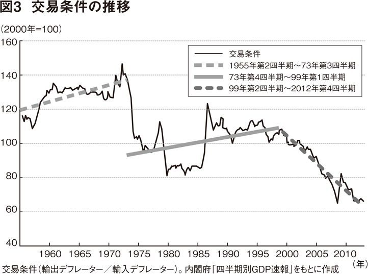

| 集英社電子書籍ガイド２０１４‐２０１５ 集英社新書編 | |
| 集英社デジタル出版室 | |
| (2014) | |
集英社ｅ新書ベスト10 ガイド
この本は縦書きでレイアウトされています（一部除き）。
また、ご覧になる機種により、表示の差が認められることがあります。
はじめに
本書をダウンロードしていただきありがとうございます。集英社は２０００年９月より電子書籍を配信してきました。配信を始めた当初より作品数も増え、２０１４年11 月現在、約２６００作品を配信中です。
その２０１４年配信タイトルより、話題の新書10 タイトルをご紹介いたします。すでに電子書籍を体験したことのある方も、まだ未体験の方も、本書をお手持ちの端末にダウンロードして、デジタル読書ライフの一助にしていただければ幸いです。
２０１４年11 月吉日 集英社 デジタル出版室
【目次】
●一神教と国家 イスラーム、キリスト教、ユダヤ教 内田 樹／中田 考
●行動分析学入門 杉山尚子
●心の力 姜尚中
●司馬 太郎が描かなかった幕末 松陰・龍馬・晋作の実像 一坂太郎
●資本主義の終焉と歴史の危機 水野和夫
●世界と闘う「読書術」 思想を鍛える一〇〇〇冊 佐高 信／佐藤 優
●自由をつくる 自在に生きる 森 博嗣
●成長から成熟へ さよなら経済大国 天野祐吉
●はじめての憲法教室 水島朝穂
●わるいやつら 宇都宮健児
集英社ｅ新書ベスト10 ガイド

一神教と国家 ――イスラーム、キリスト教、ユダヤ教
内田 樹／中田 考
【内容紹介】
「ユダヤ教、キリスト教、イスラームの神は同じ」「戒律を重んじるユダヤ教とイスラームのコミュニティは驚くほど似ている」「千年以上にわたって中東ではユダヤ教、キリスト教がイスラームのルールに則って共存してきた」。なのに、どうして近現代史において衝突が絶えないのか？ 本書は、日本ではなじみが薄い一神教の基礎知識を思想家内田樹とイスラーム学者中田考がイスラームを主軸に解説。そして、イスラームと国民国家、アメリカ式のグローバリズムの間にある問題を浮き彫りにし、今後の展望を探る。
【著者プロフィール】
内田 樹（うちだ たつる）
一九五○年東京都生まれ。思想家・武道家。神戸女学院大学名誉教授。専門はフランス現代思想、武道論等。著書に『私家版・ユダヤ文化論』（文春新書）等多数。
中田 考（なかた こう）
一九六○年岡山県生まれ。イスラーム学者。同志社大学神学部元教授。専門はイスラーム法学・神学。哲学博士。著書に『イスラームのロジック』（講談社）他。
一神教と国家
イスラーム、キリスト教、ユダヤ教 （立読み版）
内田 樹／中田 考
目次
序 レヴィナシアン・ウチダ、ムスリム中田先生に出会う 内田 樹
第一章 イスラームとは何か？
ムスリム先生来たる！
ジャパニーズ・イスラームの歴史
私がムスリムになった理由
イスラームは厳しくない
吝嗇は最大の恥である
大皿を囲む文化
ムスリムのユダヤ教、キリスト教観
シーア派とスンナ派の違い
ハラール
マッカ巡礼
第二章 一神教の風土
ユダヤ教、キリスト教、イスラーム、ルーツは同じ
羊を率いてどこまでも
「歓待する文化」vs 「断る文化」
生身の身体感覚
日本とユダヤの意外な関係
多神教と一神教
人の心はわからない
原理主義同士で通じ合う
第三章 世俗主義が生んだ怪物
「柵を作る人」と「柵を作らない人」の戦い
植民地から生まれた国家
イスラームに国境なし
リヴァイアサンは越境する者を潰す
「食」でグローバル化を食い止める
米国式ダブルスタンダード戦略
マネーvs 金貨
お金は回すべし
「貯め込み」は止めなさい
内向き志向な日本人
第四章 混迷の中東世界をどう読むか
アラブの春
混迷のアフガニスタン
アメリカの占領経営の劣化
シリアに政府はいらない
法人概念がムスリムの最大の敵
イスラームは占領経営がうまかった！
エジプト革命の行方
第五章 カワユイ カリフ道
今こそカリフ制
ＥＵをお手本に
「kawaii」の底力
アジアのムスリムパワー
共同体を求める心
補遺 中東情勢を理解するための現代史 中田 考
現代中東世界とカリフ制再興論の出自を理解するために知るべき四つの事件
（１）イラン革命
（２）マッカのマスジド・ハラーム占拠事件
（３）ソ連のアフガニスタン侵攻
（４）エジプト、サダト大統領暗殺
「アラブの春」後の展望
跋 未だ想像もできないものへの憧憬 中田 考
序 レヴィナシアン ＊１ ・ウチダ、ムスリム中田先生に出会う
内田 樹
イスラーム学徒、放浪のグローバル無職ホームレス野良博士、「カワユイ（^◇^）金貨の伝道師」「皆んなのカワユイ（^◇^）カリフ道」家元......。そんなユニークないろいろのニックネームを持つ中田考先生をわが凱 風 館 （内田の学塾兼道場） にお迎えして、対談を行なうことになりました。
中田先生とは不思議なご縁で知り合いました。
以前、稽 古 に来ていた同志社の大学院生が、「大学のナカタ先生という方が居合に興味があって、一度見に来たいとおっしゃってるんですけど、お連れしていいですか？」と訊 いてきました。いいよ、連れておいでよと気楽に答えたら、次の居合研究会の時に長いひげをはやされた中田先生がおみえになりました。刀をお持ちでなかったので、僕が持ってきた予備の模擬刀をお貸ししました。長身の中田先生ですが、二尺五寸五分の刀はいささかもてあましぎみでした。その時に汗だくになって納刀のお稽古をされていた姿がとても印象深く、またおいでになるかしらと思っていたら、その後、院生は引っ越してお稽古に来られなくなり、中田先生も同志社をおやめになり、そのまま連絡は途絶えてしまったのでした。
中田先生との「再会」はツイッター上でした。
僕が政治的なことについて書くと、中田先生が「だからこそカリフ制！」というリプライでコメントをつけてくださるということが何度か繰り返されました。
はて、中田先生が地上のすべての政治的矛盾を一気に解消すべく構想されているカリフ制とはいかなるものであろうか......と興味が湧 いてきました。
そんな時に僕と光岡英 稔 先生との共著『荒天の武学』（集英社新書、二〇一二年） の出版記念イベントが心斎橋の書店で開かれ、そこに中田先生がおみえになりました。久 闊 を叙して僕が集英社の担当編集者の伊藤直樹君に中田先生を紹介すると、伊藤君は即座にひらめくものがあったのでしょう、「中田先生との対談を本にしませんか」という魅力的なアイデアを提示してきました。
僕の方も、ツイッター上で「だからこそカリフ制！」というレスポンスを何度もいただいて興味津々でしたので、よし、このさい訊きたいことはぜんぶ訊いてしまおう、とその話に乗ったのでした。他にいろいろと仕事のバックオーダーがたまっていたのですけれど、どうもおもしろそうな企画を目の前にぶらさげられるとくらくらっと心が動いてしまうウチダなのです（伊藤君は僕に『ＯＮＥ ＰＩＥＣＥ』論を書かせ、続いて光岡先生との対談本を仕掛け、続いて本書と、それぞれまるで毛色の違う本の企画を三つ連続で実現させたことになります。まことに「あなどれない」編集者です） 。
中田先生のカリフ制再興論はスケールの大きな政治的構想です。カリフ制については、本書内でも中田先生ご自身から説明していただいておりますが、基礎的な情報だけ、ここでご披露しておきます。
イスラーム世界に預言者として登場したムハンマド ＊２ が七世紀に没した後、その後継者である「カリフ」がイスラーム共同体の中から選ばれることになりました。以降、カリフは広大なイスラーム世界を束ねる統合の宗教的・政治的な軸となり、多少の曲折はあったものの、一九二四年にトルコ建国の父と呼ばれたムスタファ・ケマル ＊３ が廃止するまで千三百年ほど続いたのです。
カリフはイスラーム信仰共同体（ウンマ） 統合の生きた象徴であり、それが失われたことによって、世界の十六億のムスリムの信仰的な結びつきは大きく損なわれました。まことに惜しむべきことではあります。でも、歴史の中ではよくあること、と僕は思っておりました。
しかし、どうもそうではないらしい。中田先生はイスラーム諸国の現状は歴史の自然過程ではなく、むしろ歴史の進展がねじ曲げられた結果ではないかと考えています。カリフ制はその歴史的意義を失って消滅したのではなく、カリフ制がその歴史的意義をまっとうすることを望まない人々によって、人為的に、暴力的に廃絶されたのではないか、と。それによって「存在すべきもの」が存在しなくなった、と。それゆえ、カリフ制が再建されなければならない。それが中田先生の理路のようです。
中田先生の著書に、こんな一節があります。
「なぜムスリム諸国間に経済上の相互協力や相互補完がまったく存在しないのか。サウジアラビアの富と、スーダンの労働力および潜在的農業生産力が合わされば、成功を約束された巨大な農産業が生まれるであろう。湾岸諸国の投資とエジプトの技術および人口が合わされば、有望な製造業が生まれることになろう。しかしなぜ彼らはそうしないのか。」
「宗教、歴史、言葉および文化の点で我々はお互いに類似しているのに、なぜ我々はこんなにも分裂しているのか。」
（『カリフ制こそ解答』ムスリム新聞社、二〇〇七年）
なるほど。言われてみると、その通りです。僕たちは今ある世界が「あるがままの世界」「あるべき世界」だと錯覚しがちですが、実は今ある世界は「それとは違うかたちでもありえた世界」に他なりません。なぜ、世界はこのようであって、これとは違うかたちではないのか（そうなってもよかったはずだし、そうなるべきなのに） 。
僕はこういう問いかけこそ、本当の意味で知性的な 問いのかたちだと思います。そして中田先生はその「本当の意味で知性的な問い」を自分で立て、こう答えます。世界が「あるべきかたち」になっていないのはカリフ制が廃止されてしまったからである。
おお、なんという大胆な。で、その理路は？ 中田先生はこう書きます。
一九二四年にムスタファ・ケマルがカリフ制度（khilafah） を廃止した時、ムスリムは最終的に自分たちの生の統制原理であったイスラーム聖法（シャリーアの諸規範） を放棄してしまった。彼らは西洋の法典および統治制度を採用し、宗教を実生活の領域から切り離した。彼らはアッラーフのみに対する崇拝から逸れ、人造の諸制度と法律を崇拝するようになった。これこそが我々の弱体化と屈辱の原因なのである。
（前掲書）
宗教、歴史、言語及び文化の点で深い類似性を持つ集団がモロッコからインドネシアに至る広大な地域に広がっていながら、それらが政治的にばらばらになっており、相互支援、相互扶助のシステムが存在しないことを僕たちは当然のように思っています。でも、よく考えるとこれはかなり奇異なことと言わねばなりません。
キリスト教圏とか仏教圏とか儒教圏とかいう宗教圏には「宗教」的な同一性しかありません。歴史にも文化にも重なるものがなく、特に「言語」において共通のものがない。しかし、イスラーム諸国はアラビア語という「宗教的なリンガフランカ ＊４ 」を共有しています。モロッコでもインドネシアでも、ムスリムたちは同じアラビア語の聖典を読み、アラビア語で祈ります。これに対して、世界宗教であるキリスト教の人々がラテン語やコイネー ＊５ を共通語として対話することはありません。ムスリムにより近いのはユダヤ教共同体です。日々の儀礼や祈りにおいて世界中のユダヤ人はヘブライ語を繰り返し口にします。しかし、日常的に聖書ヘブライ語で会話している人はたぶんおりません。でも、ムスリムの場合は、彼らの聖典である『クルアーン ＊６ （コーラン） 』も『ハディース ＊７ 』もアラビア語で書かれています。そしてアラビア語を日常語とする人々は世界に二億人もいるのです。
にもかかわらず、イスラーム諸国は連帯していない。連帯というにはほど遠い。これは話の筋目が通りません。
なぜイスラーム諸国は宗教的連帯によって統合されないのか？
これだけ統合の条件が整っていながら統合されないのは、「政治的なファクターが統合を妨げている」という方が合理的でしょう。中田先生はこう答えます。
それはイスラーム世界の支配層が分裂の恒久化を図っているからにほかならない。文明の衝突を唱えるハンチントンも、湾岸戦争に関して「イスラム政府の意見は最初は分かれていたが、アラブ人やイスラム教徒の意見は、初めから圧倒的に反西欧だった」（『文明の衝突と二一世紀の日本』、一六五頁） と認めている通り、イスラーム世界においては政府と民衆の意志の間には大きな乖 離 が存在する。
民衆レベルにおいては、民族、国家を超えたイスラームの同胞意識と、国境を越えて縦横に張り巡らされたイスラーム学、親族関係、交易などのネットワークに支えられたイスラーム世界の統一への志向性が存在する。そして既存秩序の改編を迫り支配層の既得権をおびやかすこのイスラーム世界の統一への民衆の動きを抑えるべく結成されたのがＯＩＣ（イスラーム諸国会議機構＊８ ） なのである。
（『イスラームのロジック』講談社選書メチエ、二〇〇一年）
ＯＩＣとは、一九五〇～一九六〇年代に旧ソ連圏をスポンサーとするアラブ社会主義の運動が台頭してきた時、これに対抗して湾岸の王制諸国が結成した組織です。一見すると世界のイスラーム諸国民の連帯のための組織のように見えますが、中田先生の評価は違います。
ＯＩＣとは、その出自からして、イスラームの連帯をうたう憲章とは裏腹に、イスラーム世界の統一とは真っ向から対立するベクトルを有するものなのである。つまりＯＩＣの内実は、「相互に主権を尊重する」との美名の下に、加盟諸国の支配者の間で結ばれた「互いの縄張りを侵さない」との「紳士協定」＝イスラーム世界の再統合を阻止して分裂の現状を固定化し、既得権を守るためのカルテルである。そしてその機能はムスリム民衆の目からウンマの分裂の現状を隠蔽し、あたかも連帯が存在しているかのような幻想を与え、ウンマの連帯意識に適当なはけ口を与えることにある。
（前掲書）
つまり、イスラーム共同体が成立しないのは「イスラーム共同体の擁護」を組織目的に掲げる組織が、実際にはウンマの分裂を固定化することによって既得権を守ろうとしているからだというわけです。
なるほど。僕はこのような分析があることを中田先生から初めて教えていただきました。
あらゆるムスリムの政治単位は――国際機関も国民国家も政党もジハード組織も――、どれもその最終目標として「イスラーム共同体の統合」をうたっているのに、なぜ現実にはお互いを攻撃し合っているのか。その理由が僕にはいま一つわからなかったのです。
ウンマの統合を妨げているのはいかなる歴史的条件なのか、ウンマが分裂していることで利益を得ているのは誰 なのか、それで苦しんでいるのは誰なのか、どのような政治過程を経由すればウンマの再統合は果されるのか。
おお、なんというスケールの大きな問いでありましょう。
でも、中田先生のこの問題意識は僕自身のそれと決して大きく隔たったものであるわけではありません。
ご存じのように、僕はアンチ・グローバリズムという立場から政治的発言をしてきております。僕がグローバリズムを批判するのは、それが国民国家と利益相反することがはっきりしてきたからです。ここで僕の立場を少しご説明しておきたいと思います。
国民国家は今解体過程に入っています。国民国家というのは国境線を持ち、常備軍と官僚群を備え、言語や宗教や生活習慣や伝統文化を共有する国民たちがそこに帰属意識を持ち、相互扶助的なしかたで共生している共同体のことです。
このシステムは過去四百年ほど国際政治の基本単位でした。もちろん、かなり無理のあるシステムです。実際には、同一の言語や宗教や生活文化を共有していた集団を人為的な国境線を引いて分割して、「こちらは......人、こちらは......人」と無理やり切り分けたり、逆に「ここは今日から......人の国になったのだから、それ以外の〝外国人〟にはここに住む権利がない」と追い立てたりと、ろくでもないこともあちこちで起こりました。
それでも、まあこのシステムが比較的使い勝手がよいというごくプラグマティックな理由で、近代世界は久しく国民国家というものを統治単位の基本としてきたのです。それが今解体過程に入りました。解体に至った理由については、対談の中で触れる機会があると思います。簡単に言えば、国境線で区切られた国民国家が滅び、それに代わって国境を越えた新たな「支配者たち」と新たな「被支配者たち」の階層社会が出現してくる。僕はそういうふうに見通しています。
喩 えて言えば、これまでは国民国家内で「富裕な人たちの住むエリア」と「貧乏人の住むエリア」の棲 み分けがあったとすれば、これからは「金持ちだけが住む国」と「貧乏人しか住んでいない国」への棲み分けになるということです。国民国家が解体するというのは「そういうこと」です。この流れはもう止まらないでしょう。
僕は「ありものの使い回し主義者」（「ブリコルール」とレヴィ＝ストロースは呼びました） ですので、この「解体しつつある国民国家」をどうやって使い延ばすかを喫緊の政治課題だととらえています。この点が、僕と一気にカリフ制再建を目ざす中田先生のいちばん大きな違いです。
国民国家が「不十分な制度」であるということは僕にもよくわかっています。でも、使えないところを補修し、使えるところに油を差せば、もう少し「もつ」んじゃないか。僕はそういうふうに考えます。国民国家が解体してしまうと、僕たちはもう「同胞」という概念を維持することができなくなります。中田先生のようなムスリムなら十六億の同胞との連帯を夢見ることができますが、無宗教的日本人は日本という国民国家の外枠が失われたら、手を携えて生きるべき「同胞」とは誰のことだかわからなくなってしまう。相互扶助・相互支援のネットワーク作りのためにはある種の運命共同体幻想がどうしても必要ですけれど、国を失った日本人にはもうそれがない。彼らはたぶんひどく孤独で、ひどく利己的な「祖国なき民」になってしまうのではないかと不安になるのです。
中田先生は国民国家・領邦国家こそ「諸悪の根源」という立場です。ですから、僕みたいな人間がじたばたしてうっかり国民国家が長持ちすると先生は迷惑する。ですから、ある意味で、僕たちはまったく対立的な、相容 れない立場にいるわけです。にもかかわらず、お会いする前から僕たちはなんとなく「うまくやっていけそう」な気がしました。政治的意見は違うけれど、「うまくやっていけそう」ということはとてもたいせつなことだと僕は思っています。
僕のささやかな政治的経験が教えてくれたのは、綱領は綱領、人間は人間だということです。「正しい政治綱領」を奉じているということは、必ずしもその人が正しい人間であることを意味しませんが、「まっすぐな生き方をしている人」が語る政治綱領には必ず掬 すべき知見が含まれています。その人がマルクス主義者であろうと、天皇主義者であろうと、（中田先生のような） ムスリムであろうと、それは変わらない。これは僕の確信です。
中田先生は「まっすぐな生き方をしている人」です。それはわかります。僕だって、それくらいには人を見る眼があります。ですから、僕の基本的な構えは「この人が言っていることの中には、自分には理解できない点もあり、同意しがたい点もあるけれど、しばらく口を噤 んで傾聴することにしよう。この人は必ずや傾聴に値するような〝驚嘆すべき知見〟を開示してくれるはずだから」というものです。
実際に僕は対談を通じてイスラーム文化に対する認識を改めました。それが連帯と共生のための知恵だということを教えてもらったからです。
一方の中田先生にも、僕の国民国家護持論が制度としての国民国家の物神化を目ざしているのではなく、やはり相互扶助・相互支援の共同体を基礎づけたいという願いから出ているものであることはご理解いただけたのではないかと思います。
皆さんもできたら僕と同じような対話的なモードで中田先生のお話を聞いてみて欲しいと思います。まえがきは以上です。では、対話篇にお進みください。
＊１ レヴィナシアン ユダヤ人の哲学者エマニュエル・レヴィナスの研究者あるいは信奉者。内田には『レヴィナスと愛の現象学』（文春文庫）等の著作の他、レヴィナスの『困難な自由』（国文社）等の訳業がある。レヴィナスについては「第二章 一神教の風土」注釈の＊２参照。
＊２ ムハンマド 五七〇年ごろ生～六三二年没。マッカ（メッカ）出身のクライシュ族。神アッラーの啓示を授かり預言者、神の使徒として伝道を開始する。偶像崇拝を否定し一神教を唱えたため迫害され、六二二年にマディーナ（メディナ）に移る（ヒジュラ）。イスラーム教団発展の基礎を固め、六三〇年マッカ征服の後、その勢力はアラビア半島に広がった。
＊３ ムスタファ・ケマル 一八八一年生～一九三八年没。ケマル・パシャとも。トルコの政治家、軍人、トルコ共和国初代大統領。第一次世界大戦後、連合国への領土割譲を認めたセーブル条約に反抗して、祖国解放運動を展開した。スルタン制を廃止して一九二三年共和国を樹立。一九二四年にはカリフ制度を廃止し、近代化を推し進め、議会から「アタチュルク（トルコの父）」の称号が贈られた。
＊４ リンガフランカ 母語の異なる人同士が用いる共通語。
＊５ コイネー 紀元前四世紀末から六世紀なかばまで使用されたギリシャ語における当時の共通語。「共通のことば」を意味する。
＊６ クルアーン イスラームにおける根本教典。ムハンマドが六一〇年から六三二年に亡くなるまでの二十二年間にわたってアッラーから啓示された啓典。一一四章からなり、アラビア語で「読誦されるべきもの」を意味する。コーランとも。
＊７ ハディース 預言者ムハンマドの言行（スンナ）を伝える伝承のこと。無数のテキストが存在する。
＊８ 後に「イスラーム協力機構」と改称。
第一章 イスラームとは何か？
ムスリム先生来たる！
内田 お久しぶりです。わざわざ足をお運びいただきありがとうございます。よろしくお願いいたします。
中田 こちらこそよろしくお願いいたします。先生の道場にお邪魔するのは二度目ですね。前に居合のお稽古をさせていただいた。
内田 そうでした。今目の前にずらりと居流れおりますのが当館の門人たちであります。ハサン中田先生がおいでになるということを聞いて、これだけ集まりました。
中田 うん、あの、オーディエンスがいるとは（汗） 。内田先生とサシでのトークかと思ってました。
内田 聞き手が多い方がお話しがいがあるかなーと思って。
中田 いや、私、現役の教師をやっていたころから講義がとてもヘタで。
内田 何をおっしゃいます。
中田 いやほんと。人前でしゃべるの苦手なのです。しかし、さいわい目が悪くてよく見えませんので、あまり気にせずしゃべらせていただくことにしましょう。
内田 では、まずはごく一般的なトピックからとりかかりたいと思います。九・一一以降、イスラーム世界と日本を含めた欧米社会の間には深い対立が刻まれているように思われます。イスラーム世界と日本の間でも、安定的で生産的な対話の回路は存在しないように見えます。政府レベルでもそうですし、民間レベルでもそうです。もちろんイスラーム圏でビジネスをしている人たちはたくさんいますけれど、彼らにしても別にイスラーム文化に対する敬意や関心があるわけではない。特に「イスラーム原理主義者＝テロリスト」という単純な図式が流布して以来、イスラームとの対話の機会が本当に少なくなっているように思えます。いわゆる「アラブの春」に続く中東諸国での政治的混乱の報道に接しても、僕たち「普通の日本人」は何が起きているのかわからない。
中田 はい。
内田 日本人はイスラーム圏を遠い世界だと思っています。だから、そこでの内戦やテロを「対岸の火事」のようにぼんやり眺めている。でも、グローバリゼーションというのは地球規模での政治システム、経済システムの再編を意味しています。好むと好まざるとにかかわらず、日本人もこの地殻変動的な変化に巻き込まれています。リビアやエジプトやトルコやシリアで、あるいはアフガニスタンやパキスタンやインドネシアで、今何が起きているのか、これから何が起きるのか、それは僕たち日本人にとってどのような歴史的意味を持つ出来事なのか、それをきちんと理解することは緊急性の高い問いであるように僕には思われます。
こういうスケールの話をする時には、「サルにもわかるイスラーム問題Ｑ＆Ａ」というような中身の薄い概説書を読むよりも、イスラームの最前線に立っていて、どのような政治的立場からであれ、現実に深くコミットしている人の話を伺うのが、いちばんことの核心に触れる上での捷 径 であるというのは僕の学問的方法における一つの経験知です。
中田先生はイスラーム学者というだけでなく、カリフ制再建というはっきりした政治的目標を掲げて政治活動をされている。そこが際立った点だと僕は思っています。ですから、イスラーム諸国のさまざまな宗派の運動や、政治的勢力の内情について熟知していること。イスラームの現状を正確に知っていることが中田先生ご自身がそれらの国々で活動されている時に死活的に重要な情報であるわけです。
そういう最前線に立つ人からお話を伺うという特権的な機会に恵まれましたことを奇貨として、一人の素人という立場から、基本的なところから質問をしてゆきたいと思います。
まずは中田先生の提唱されている「皆んなのカワユイ（^◇^）カリフ道」でありますが、これはいったいいかなるものであるのか。
及ばずながら内田が嚙 み砕いて申し上げますが、数百年前まで、北アフリカから東南アジアにかけての広大な地域にイスラームという一つの宗教を絆 としてつながる共同体が存在しておりました。それが第一次世界大戦後、オスマントルコ帝国の解体に伴い、ヨーロッパ列強に蚕食され、小国が分立する状態になった。同時に、多くの国々が世俗化し、信仰のかたちも変容していきました。サウジアラビアやイランのように伝統をかたく守り続けている国もあり、トルコのように政教分離して、ヨーロッパ化を目ざしている国もあります。いずれにしても、かつて十何億のムスリムを結びつけていた宗教的な同胞感覚と、互助の精神は衰微してしまった。それを取り戻し、宗教を柱とした有機的な連帯をモロッコからインドネシアまでに広がるイスラーム世界に復活させよう......というのが中田先生のカリフ制再興の構想なのであります。という説明でよろしいでしょうか？
中田 けっこうです。
内田 それにしても、中田先生、なぜ日本でカリフ制について訴えているのか、意味がわからないと言われませんか？
中田 言われます。それはですね、問いが微妙にさかさまでして、日本だからこそ叫んでいるのです。特に中東の国々などはこわもての独裁政権が多いので、うかつに体制を全否定するカリフ制のことなど口走ったら大 袈 裟 ではなく本当に生命が危険です。しかし、日本はイスラームに関しては中立ですから何でも言えるのです。
内田 なるほど。
中田 で、日本をカリフ道の発信地にしようとたくらんでいるわけなのです。
内田 なるほど、なるほど。それで非イスラーム国である日本からイスラーム世界へメッセージを発信することが重要になってくるわけですね。このカリフ制については後に詳しく伺うことにいたします。この対談ではそれ以外にも、日本人にとってはまだまだ謎 の多いイスラームの文化、人々、少し広げて一神教の特質、グローバリゼーションのこと、そして混迷の中東世界の今後等、いくつかのテーマについて中田先生からお話を伺っていきたいと思っています。
中田 はい。
内田 最初に申し上げておきますけれど、私、キリスト教とユダヤ教については多少の知識はあるのですが、イスラームについては殆 ど素人です。そこで、第一章は私自身も生徒になったつもりで、「イスラーム入門編」的なお話を伺いたい、と。門人たちからも質問が来ていますので、これらを取りまとめつつ進められればと思います。
中田 うまくお答えできるといいのですが。よろしくお導き下さい。
内田 まずですね、さっそくお願いが。
中田 なんでしょう。
内田 中田先生、本日は「いかにも」というお姿をされておいでいただき、われわれ一同先生のファッションに見とれておりますが。
中田 ははは。
内田 そこで、ちょっとイスラームの礼拝というものを見せていただいていいでしょうか。セッション開始の儀式ということで。
中田 わかりました。私膝 が悪いのであまりキレイな礼拝ができないのですけど。
（中田、方角を確かめて礼拝をする。）
内田 実物。ありがとうございます。ちなみに今ご覧になったのは方位磁針ですか。
中田 はい。マッカ（メッカ） はあっちですよと教えてくれるアプリがあるのです。礼拝の時間を知らせてくれる「プレイヤータイム」というものもあります。
内田 便利なものがあるのですね。
＊この続きは製品版でお楽しみください。
行動分析学入門 ――ヒトの行動の思いがけない理由
杉山尚子
【内容紹介】
失敗行動や犯罪の原因は、〝心〟に求められることが多い。「あいつはやる気がない」「過去のトラウマだ」等々。しかし、これでは評価にこそなりえても、問題解決にはつながらない。行動分析学は、ヒト及び動物の行動を「行動随伴性」という独自の概念によって明らかにするもので、行動の原因を個体内部、つまり心ではなく、個体を取り巻く外的環境に求めていく。アメリカの心理学者スキナーが創始した学問体系である。介護や医療、ビジネス、スポーツ、家庭などさまざまな現場で応用されており、大きな成果をあげてきた。本書は、日本における第一人者による、わが国初の一般用入門書である。
【著者プロフィール】
杉山尚子（すぎやま なおこ）
東京都生まれ。一九八八年、慶應義塾大学大学院心理学専攻博士課程修了。山脇学園短期大学助教授。二○○○年より日本行動分析学会常任理事、○四年より日本行動科学学会事務局長。行動分析学の日本での研究、普及に全力を傾けている。共著に『行動分析学入門』（産業図書）、『看護学生のための心理学』（医学書院）、共訳に『うまくやるための強化の原理』（二瓶社）など。
行動分析学入門
―ヒトの行動の思いがけない理由 （立読み版）
杉山尚子
まえがき
私がかつて二夏を過ごした米国ウェスタン・ミシガン大学の心理学者、アラン・ポーリングは、『A Primer of Human Behavioral Pharmacology ヒトの行動薬理学入門』という本の冒頭で、「Drugs and sex are two topics about which most people have strong opinions and weak understanding.（薬物とセックスというのは、多くの人々が独自の見解を強くもちながら、実態についてはろくに理解していない２大テーマである）」と述べている。薬物とセックスだけでなく、「こころ」についても同じことがいえるのではないだろうか。
多くの動物種の中で、人間だけが自分と他者の心について関心を寄せてきた。それは心の研究をする心理学者だけに限ったことではない。日常生活の至るところで、私たちは自分はもとより、他者の心についても語っている。心理という言葉は、心理学の専門家だけが振りかざす言葉ではなく、「心理戦」「女性の心理」、はては「優先席の心理」という具合に、日常用語として定着しているといってよい。
とりわけ、「21 世紀は心の時代」という言葉に代表されるように、現代では、20 世紀の物質文明からの転換の必要性を多くの人が認識している。また、昨今の社会状況下で発生する、犯罪や児童虐待といったさまざまな痛ましい出来事に対して、人々は強い関心を寄せ、心の復権の重要性を唱えている。専門家のみならず、あらゆる人々が心について解釈と説明を試みてきた。
しかし、本書の第１章でも述べるように、心理学という分野は一枚岩ではない。人それぞれ心についての見解があって、しかも強く自己主張するのは、何も一般の人々に限った話ではなく、アカデミックな心理学の世界でも同じであり、心に対する考え方は多様なのである。
そのような状況の中で、本書は、1930年代に米国の心理学者 Ｂ・Ｆ・スキナー（1904―1990）が創始した、行動分析学と呼ばれる心理学について、できるだけわかりやすく述べたものである。行動分析学とは、文字通り行動を分析する科学である。行動を分析することがなぜ心理学になるのだろうか。その謎解きは本文を読んでいただくとして、人間の「こころ」を考える際に、心理学という言葉から連想される、これまでの常識的な見方とはだいぶ異なる視点を提供していきたいと思っている。
新書判である以上、紙幅の制約があり、行動分析学が過去70 余年にわたって蓄積してきた知見を、ここですべて披露することはとうていできない。したがって、本書が狙ったのは、行動分析学が人間の問題を扱う時の〈核〉となる考え方を伝えることである。
本書によって、読者の皆様が人間の問題を考える際にこれまでと違った新しい視点を獲得し、それを面白いと思ってくだされば幸いである。
目 次
第１章 心理学をめぐる誤解
心とこころ
心理学にはいろいろある
行動分析学は行動の原因を解明する
行動の科学は成り立つのか
行動分析学は行動の問題を解決する
心理学の研究対象
３つのレベル
行動分析学が受け入れる説明
行動分析学的行動観
行動分析とは行動の実験的分析である
行動の原因をどう考えるか
行動にはられたラベルと医学モデル
操作不能の原因
行動分析学が考える行動の原因
行動とは何か
行動とは死人にはできない活動のこと
行動には見えないが行動といえるもの
行動の種類（レスポンデント行動）
オペラント行動
オペラント行動の法則
行動随伴性
個人攻撃の罠
第２章 行動の原理
好子出現の強化
嫌子消失の強化
嫌子出現の弱化
好子消失の弱化
行動は無意識のうちに強化／弱化されることもある
消去と復帰
●消去
●復帰
先行刺激による行動の制御
スキナー箱
般化
第３章 行動をどのように変えるか
新年の誓いはなぜ破られるか？
知識こそが行動の源なのか？
具体的な指示を出す―行動的翻訳―
技能に問題がある場合の対処法
シェイピング
チェイニング
随伴性を変える
60 秒ルール
抹殺法
新しい随伴性を加える
代替行動という考え方
消去
弱化と消去
行動を増やすには
第４章 スキナーの思想と実験的行動分析
スキナーの哲学
はじめはネズミ、そしてハトへ
系統的再現
実験室における人間の行動
噓は強化できる
強化スケジュール
消去抵抗
バースト
部分強化
なぜ実験か？
偶然を排除するには
単一被験体法という考え方
節約の原理
第５章 言語行動
人間の特徴は、言語の使用である
スキナーの『言語行動』
言語は行動である
言語はなぜ行動なのか
言語共同体とは何か
話し手と聞き手の随伴性
言語行動の種類
マンド
タクト
聞き手は話し手の言語行動を強化する？
イントラバーバル
エコーイック
文字が関与する言語行動
言語を随伴性で見るということ
行動の形式と機能
言語行動としての非言語行動
言語獲得
指さしと言語
私的出来事のタクト
あとがき
引用・参考文献
第１章 心理学をめぐる誤解
心とこころ
本書を手に取って「行動分析学」という言葉をはじめて目にした人も少なくないと思う。しかし、「心理学」という言葉を知らない人はまずいないだろう。もちろん、心理学という学問が本当はどういうものなのか、実態は知らなくとも、少なくとも名前だけは聞いたことがあるはずだ。私がこれまで教壇に立ってきた多くの大学でも、心理学を履修しようとする学生は非常に多いが、彼らになぜ履修を希望するのかと聞くと、「大学生の必修科目だから」「教養の定番だから」と答える学生が少なくない。ただし、ここでいう教養とは本来の意味の教養ではなく、大学で専門科目に対して教養科目と呼ばれる、あの教養のことである。
しかし、教養科目としてはじめて心理学を学ぶ大学生はもちろん、世間一般の人が心理学に抱いているイメージと、専門家が研究として行っている心理学とではずいぶん異なる。一般の人は、心理学というと、いわゆる臨床系の心理学を思いうかべる。しかし、大学ではそればかりを研究しているわけではない。のちに述べるように、心理学者は動物実験まで行うのだが、世間では誰もそのようには考えていない。大学学部時代、私はある先生から、「大学で心理学の入門講義をする時には、まずブレイン・ウォッシングをする」とはっきり言われた。それまで抱いていた心理学のイメージを完全に捨てさせるのである。
心理学は、その名が示すように「心」を対象にした学問であると考えられている。しかし、たとえそうだとしても、その心をどのようにとらえるかが問題となる。心理学でいう「心」とは、必ずしも私たちが日常用語で使っている「こころ」と同じものを意味するとは限らない。日常用語で多くの人が考える時の心とは、「こころ」（気持 feelings）。しかし、心理学でいうところの「心」とは、英語では mind であり、それはむしろ頭の働きを意味する。日本語で「こころ」と言う時は、自分の胸を指さすが、英語を話す人が自分の頭を指さしながら「mind」と言うのを、私は何度も見ている。
心理学にはいろいろある
行動分析学 behavior analysis は、1930年代に米国の心理学者Ｂ・Ｆ・スキナーによって創始された心理学の一体系である。一体系というからには、心理学は１つしかないのではなく、いろいろあることになる。学問は多くの場合、それぞれ固有の「学会」と呼ばれる専門者集団を形成する。
2005年の現在、日本では、心理学関連の学会の多くは、日本心理学諸学会連合という任意団体に登録しているが、ここに所属する学会だけでも、次にあげるように41 団体もある（順序は日本心理学諸学会連合の名簿にしたがって、50 音順である）。
産業・組織心理学会、日本応用教育心理学会、日本応用心理学会、日本カウンセリング学会、日本学生相談学会、日本家族心理学会、日本感情心理学会、日本基礎心理学会、日本キャリア教育学会、日本教育心理学会、日本グループ・ダイナミックス学会、日本健康心理学会、日本交通心理学会、日本行動科学学会、日本行動計量学会、日本行動分析学会、日本行動療法学会、日本催眠医学心理学会、日本産業カウンセリング学会、日本社会心理学会、日本自律訓練学会、社団法人日本心理学会、日本心理臨床学会、日本青年心理学会、日本生理心理学会、日本動物心理学会、日本特殊教育学会、日本乳幼児教育学会、日本人間性心理学会、日本認知心理学会、日本パーソナリティ心理学会、日本バイオフィードバック学会、日本箱庭療法学会、日本発達心理学会、日本犯罪心理学会、日本ブリーフサイコセラピー学会、日本遊戯療法学会、日本リハビリテイション心理学会、日本理論心理学会、日本臨床心理学会、日本臨床動作学会。
日本心理学会、日本応用心理学会、日本動物心理学会のように戦前に組織された歴史あるものもあるが、近年創立された新興の学会も多い。
専門外の人は、心理学といえば何か決まった１つの科学を想像するかもしれないが、心理学というのは、実はこのようにたくさんある。なぜこのようにたくさんあるのか。それぞれどこが違うのか？ たとえば、教育心理学や、犯罪心理学の場合、専門家でなくとも、どう違うのかはだいたい想像がつく。教育心理学は教育における心理について研究するのであろうし、犯罪心理学は犯罪者の心理について研究するのだろう。理論心理学会は、心理学の理論について研究するに違いない。つまり、これらの心理学は「研究対象が何であるか」が違うのだということになる。
心理学諸学会連合に加盟している行動分析学も心理学の１つである。それでは、行動分析学とは、何を研究する心理学なのだろうか？ 行動分析学は、そもそも心理学という名前がついていないことが示すように、研究対象によって規定された心理学ではない。少なくとも、行動分析学という名前は他の心理学とは違い、ある特定の研究対象に対してつけられた名前ではなく、のちに述べるように研究の枠組み、つまり、人間（と人間以外の動物）の心理をどのように 研究するのかという立場や視点を重視した名前なのである。
行動分析学は行動の原因を解明する
行動分析学は、その名称に研究対象を規定していないが、行動分析学が何を研究するのかという問いには明確な答えがある。行動分析学とは何をする心理学なのかといえば、読んで字のごとく行動を分析する科学である。
ただし、それでは答えにならない。行動はともかく、「分析する」とはどういうことなのか答えていないからである。ノーベル賞を受賞した田中耕一さんは、たんぱく質の分析が専門だそうである。データを分析するなどという言い方もある。そのほか、分析という言葉は日常用語としてもさまざまな場面で使われるが、行動分析学という場合の「分析」とは、原因を明らかにするという意味である。つまり、人間や人間以外の動物の行動には、それをさせる原因があるのであり、行動分析学はその原因を解明し、行動に関する法則を見いだそうとする科学なのである。
行動の科学は成り立つのか
ところで、はたしてそのような科学が可能なのだろうか。私たち人間は、イヌやネコと違って理性や自由意志をもっているから、自分の考えるところに従って、あるいは自分の心のおもむくままに、「......しよう」とか、「......したい」という意志や欲求をもち行動している、と一般に考えられているし、多くの人は自分でもそう思っている。だから、人間の行動にそれをさせる法則があるとはにわかに信じがたい。自分のしていることが自分の意志ではなく、法則に基づいてなされていると考えるのは不本意な気もする。まるで、自分がロボットだといわれたような気さえするかもしれない。しかし、のちに詳述するように、人間の行動の背後には、当の本人さえ気づいていない行動の法則があるのである。そして、もっと考えなければならないのは、自分が無意識のうちに法則に従って行動していたとしても、自分が何かにコントロールされているのではなく「まったく自由である」と感じることはできるということである。
行動分析学は行動の問題を解決する
人間は生きている限り、朝起きてから夜寝るまで、さまざまな行動をする。蒲団から出て、顔を洗って、服を着替え、朝食をとる。それから会社や学校に行く人もいるだろう。こうして毎日の生活はおおむねスムーズに進行するが、誰でも考えてみれば思い当たるように、日常生活で大なり小なり行動に問題を抱えている人は少なくない。たとえば、朝なかなか起きられずにいつも遅刻寸前であるとか、タバコをやめたいのにやめられないとか、仕事がたまっているのに誘われるとつい遊びに行ってしまうなど、いろいろあるだろう。目覚まし時計が鳴っても止めてまた二度寝したり、やめると決意したタバコを吸ったり、仕事をさぼって遊びに行くのは、もちろんどれも行動である。したがって、それらのすべきでない行動をなぜしてしまうのか、あるいは、しなければいけない行動をなぜしないのかに関しては、「行動の法則」に基づいた説明が可能だ。理由があってしてしまうのだし、やらないのである。
しかし、だからといって、私が遅刻をするのは、人間の行動の法則に基づいているのだから仕方がない、と開き直っていいかというと、現実はそうもいかない。何とかそれを直して、生活を改善したいと思う人は多いだろう。行動の原因がわかるのならなおのこと、何とかして解決したいと考えても不思議ではない。ちょうど、基礎科学で得られたさまざまの知見が応用され、科学技術として花開き、現実の私たちの生活に恵みをもたらしてくれるように、行動の原因を科学することで得られた知見をもとに、現実の行動をよりよい方向に改善することができるのではないかと考えるのは、自然の成り行きである。実際に、1930年代のはじめに成立した行動分析学は、1960年頃から、発見された行動の法則に基づいて、現実社会のさまざまな行動における問題を解決することに取り組んできて、今日に至っている。これらの応用研究が始まってからおよそ40 年が経過したが、現在までに行われてきた研究分野には、次のようなものがある。
自閉症
発達障害
行動薬理学
臨床的介入
家族への介入
行動医学（医療、健康、リハビリテーションなど）
コミュニティへの介入
人間の発達
老年学
教育
組織行動マネジメント
言動行動
応用動物行動学
スポーツ行動分析（行動的コーチング）
このリストと先にあげた、日本の心理学の学術団体のリストとを比べてみよう。かなりのオーバーラップが見てとれるのではないだろうか。
すでに述べたように、多くの心理学は研究対象によって規定されている。したがって、対象ごとにさまざまな心理学がある。そして、基礎心理学はもちろん、生理心理学、動物心理学、理論心理学は基礎系の心理学と呼ばれ、教育心理学や臨床心理学や社会心理学は応用系の心理学と呼ばれてきた。一般には基礎研究の基盤のうえに応用研究が成立すると考えるわけだが、現実は必ずしもそうではない。両者は研究対象が異なるだけでなく、アプローチの仕方そのものが異なるから、少なくとも出発点においては別個の科学であるとさえいえる。
一方、行動分析学は「人間と人間以外の動物のあらゆる行動を対象として、独特の行動観によって規定されている心理学」である。研究対象である行動に対するアプローチの仕方を確立したことで成立した心理学であるから、基礎の研究とその応用とがそもそものはじめから連携していた。行動分析学とは、「行動の原因を解明し行動の法則を発見する基礎科学」と、「現実社会における人々の行動の問題を基礎科学で発見された法則に基づいて解決していく応用科学」の２つの側面を同時にあわせもつ心理学なのである。
＊この続きは製品版でお楽しみください。
心の力
姜尚中
【内容紹介】
ミリオンセラー『悩む力』と長編小説『心』の著者が、夏目漱石が一○○年前に書き残した最大の問題作に挑む。登場人物〝先生〟の長大な遺書を収めた漱石の『こころ』は、なぜ多くの読者の感情を揺さぶってきたのか。それは、この世に生きる者がみな、誰かに先立たれた存在だからだ。「死にゆく人々は、みんな先生」という認識から見えてくるものとは？ 漱石『こころ』とトーマス・マン『魔の山』の後日談を描いた実験的小説も収録。心の実質を太くする生き方を提唱した、新しいスタイルの物語人生論。
【著者プロフィール】
姜尚中（カンサンジュン）
一九五○年生まれ。聖学院大学全学教授、東京大学名誉教授。専攻は政治学・政治思想史。著書に、一○○部超のベストセラー『悩む力』と『続・悩む力』のほか、『マックス・ウェーバーと近代』『オリエンタリズムの彼方へ』『ナショナリズム』『日朝関係の克服』『在日』『姜尚中の政治学入門』『リーダーは半歩前を歩け』など。小説作品に『母―オモニ―』『心』がある。
心の力 （立読み版）
姜尚中
目 次
序 章 「心の力」をつけるとは
不安に怯えるつかの間の幸福感 物語人生論 ハンス・カストルプと「河出育郎」 二つのダヴォス
『続・こゝろ』① 進駐軍
第一章 現代という武器なき戦場
なぜ『こころ』なのか マンが描いた二十世紀のヨーロッパ 「魔の山」の住人たち 第三の「戦後派 」
『続・こゝろ』② 頰傷の男
第二章 なぜ生きづらいのか
代替案 がない 〝隣人〟がいない やるべきことがわからない 時代と心
『続・こゝろ』③ 秘密箱
第三章 「魔の山（イニシエーション）」の力
モラトリアムのすすめ 卒業証書をもらっても 「先生」探し 「秘義伝授 」というもの 脱グローバリズム
『続・こゝろ』④ 洗礼盤
第四章 真ん中でいこう
偉大なる平凡 染まらないということ 人生の厄介息子
『続・こゝろ』⑤ 山の上のホテル
第五章 「語り継ぐ」ということ
デス・ノベル 死によって生が輝く 投げ出す力、受け取る力 消えない命のともしび
『続・こゝろ』⑥ 万年筆
終 章 いまこそ「心の力」
『こころ』あらすじ
『魔の山』あらすじ
『魔の山』登場人物紹介
引用・主要参考文献
おわりに
はじめに
私は、東日本大震災の前、愛する息子を亡くし、悲しみというよりは、自分の心がからっぽになる、心の無重力状態に陥りました。
肉体は確かにあるのです。痛いとか、心地よいとか、身体的な感覚はハッキリしているのです。でも、まるで魂が遊離し、心が頭の上から自分の身体を見つめているような、そんな心身の乖 離 がずっと続きました。
やがて、少しずつ息子の不在という現実を受け入れていく中で、激しい悲しみに襲われ、涙が止めどもなく溢 れ出し、嗚 咽 することがありました。
心に重力が戻ってきたのです。
でも、その代償なのでしょうか、深い悲しみと苦しみが心を苛 むようになったのです。その後は、我をふり返る日々が続き、心は萎 んでいくばかりでした。
しかし、私は気づいたのです。息子とのかけがえのない日々は、決して失われることなく、私の過去の中にしっかりとしまわれていると。この世に生きる者はみな、誰かに先立たれた存在であるはずです。そして先に逝 ったかけがえない人びとの記憶が、人生に意味を与える物語の支えになっていることに気づいたのです。
父や母、恩師や親友、そして息子......。彼らは、過去になってしまいました。しかし、彼らは、ただ消滅したのではありません、生きている、過去として生きている、そして過去だけが確かに「存在」していると言えるのです。
こう思いながら、脳裏に浮かんだのは、夏目漱 石 の『こころ』でした。
初めて読んだのは、十七歳のころ。
人生が美しいなんて、決して言わせないぞ、若者が希望に溢れているなんて、噓 っぱちじゃないか――。
捻 くれて、斜 に構えながらも、自尊心だけは人一倍大きい未熟な若者、それが私でした。でも挫 折 の中で身を持て余しながらも、何かにすがりたい思いで一杯だったのです。
まだ高校生だった自分が、どこまでこの作品の深みを理解していたかは、定かではありませんが、わからないなりに、何か強い印象を受けました。
すべてを投げ打って自らを告白する先生と、その告白を受け取る「私」。その「私」が過去をふり返りながら、亡き先生の秘密を語る『こころ』は、先生から「私」への、死者から生者への、心の相続でもあります。いまを生きる「私」は、いわば、人生の謎 に迫る「秘義」を先生から授かり、それをしっかりと受け継いで、次に語り継ぐため、先生について語り始めるのです。
この意味で死んでいった人びとは、みんな先生と言えるかもしれません。私たちは、こうした「秘義伝授 」を通じて心の実質を太くし、「心の力」を自覚できるのかもしれません。
ところが、これとは反対に、過去を見失い、「出会った人びと」を見失い、ただひたすら未来を思い煩いながら現在という一瞬一瞬を生きている限り、心の力は見失われ、心は虚ろになっていくばかりではないでしょうか。
なるほど、過去をふり返らず、未来に向けて前向きに生きろ、そうした励ましの言葉は、耳に心地よく、肯定的なイメージを与えてくれるかもしれません。しかし、その肝心の未来そのものが、どうなるのか、皆目見当もつかないのですから、不安にならないのが、不思議なくらいです。まだ「ある」とも言えない未来をあれこれと予測し、株価の乱高下のようなものに自らを託すとなれば、片時も落ち着いてはいられないはずです。
過去は意味がない、未来がすべてだ。
こうした時間にまつわる現代的な意識を逆転させて、むしろ確実に「ある」過去に目を向けさせ、そこから心の力の源へと遡 る物語が、これから取り上げる夏目漱石の『こころ』であり、ドイツの作家、トーマス・マンの『魔の山』です。
心というものは、自分が何者であり、これまでどんな人生を歩んできたのか、「そして、それから」どう生きようとするのかという、自分なりの自己理解と密接に結びついています。この意味で、心の力は、人生に意味を与える物語においてのみ、よりよく理解できると思うのです。
それでは、心の力をつけるとはどんなことなのか、考えてみましょう。
序章 「心の力」をつけるとは
不安に怯えるつかの間の幸福感
心の実質を太くしたい。
度胸がついて、弱気や不安を一掃し、明るく、前向きで、健やかで、美しく、そして幸せになりたい。これらはみんなの願いに違いありません。でも、実際はどうでしょうか。そのようなささやかな望みすらも、なかなか手に入れられない現実があるのではないでしょうか。
それでも、巷 には、潑 剌 とした人生や長生きの秘 訣 、美しい容姿やボディのケア、アンチ・エージングや心の養生法、果ては英才教育のための塾選びや賢いマネーの運用、損をしない相続やお墓の選び方まで、実にたくさんの数の情報や知識が氾 濫 しています。にもかかわらず、それらがどれだけ心の実質を太くしたいという願いを叶 えてくれているのか、心もとない限りです。
もっとも、他人の運命と較 べて、自分はそんなに不幸でもないし、家族にも、友人にも、職場にもまあまあ恵まれているほうだし、とりたてて落ち込むほどのことはないと思っている人も多いかもしれません。また自分たちの不遇を嘆く大人たちがいるけど、でも結構、生活をエンジョイしているし、あまり不遇な環境に置かれているという気はしないと答える若者もいるでしょう。しかし、そうした「まあまあの幸福感」も、偶然の幸運であって、不遇を強いられている他人との間に本質的な違いがあるわけではないと気づけば、そこそこの安心感など、実にうつろなものだと思うのではないでしょうか。
私がそうした思いを強くするのは、あの大震災と津波のあと、忘れられない光景を目にしたからです。
被災地の相馬市街を訪ねたとき、私はあっと息を吞 むような光景に出くわしました。ある家は全壊、家族は全員死亡か行方不明、しかしわずか一メートルも隔たっていない隣家は全員難を逃れ、家屋はやや傾 ぐほどの被害しか受けていませんでした。こうした生と死、幸運と不運がハッキリと際立つ光景を目にすることになったのです。
でも、こうした偶然の幸運と不運は、旧 くから知られていることだし、何も取り立てて新しく論じるほどのことでもない。そんな「不幸がる癖」など何の役にも立たないし、もっと前向きに偶然の幸運を自分の手でしっかりと摑 むよう邁 進 しろと説く人もいるに違いありません。こうした人たちにとって、悲観論は虚弱に通じ、楽観論は力に通じているのです。
ですが、こうした「くよくよ無用論」を説く人たちも、この二十年に起きた世界の出来事や歴史、そしてその延長上に予想される時代のことを考えると、そんなに安心していられないはずです。
この二十年間、世界を席巻したのは、「もっと自由を、もっと市場を！」の合い言葉でした。そしてソ連などの旧社会主義諸国も、アジア、アフリカ、ラテン・アメリカの国々もこぞってそれに靡 き、いまやグローバル資本主義が地球を覆うことになりました。
たしかにＩＴ技術の普及やデジタル情報システム、コミュニケーション・ネットワークを通じて、それまで光の当たらなかった地域や人びとに新しいチャンスが訪れ、貧しさや無知から脱却し、自己実現の機会を活 かせる時代が到来したと言えるかもしれません。
しかし、そうした明の部分にも増して、その暗の部分がより深まり、広がろうとしています。地域や階層の間にある格差や貧困の拡大、金融優先の経済システムの脆 弱 さやモラル・ハザード、激化する優勝劣敗や雇用不安、ヘイト・スピーチや隣人への無関心など、先進国、途上国を問わず、多くの不幸や悲惨、憎悪がばらまかれ、他方ではそうした問題に取り組んでゆく仕組みや制度が廃れ、安定した秩序はもはや望むべくもなく、一年先、二年先のことすら誰も予測できなくなりつつあります。
とりわけ、この間の金融危機や債務危機の連鎖の中で、国家破 綻 の危機すら、先進諸国ヨーロッパを襲うようになり、また基軸通貨国のアメリカまでも債務不履行の瀬戸際に追いつめられ、日本もまた物価と金利の上昇、国債暴落というリスクを抱えたアベノミクスに望みをつなごうとしているのです。
自由な資本主義、規制のない市場経済は、安定するどころか、マネーの流れに左右される不安定な経済になってしまいました。その結果、私たちはジェットコースターのように急激に上昇し、そして降下する世界の中で泡 沫 のような希望と尽きない不安を抱えながら、自己防衛に走らざるをえなくなっているのです。
昨日まで安定した職場にいたのに、今日は路頭に迷うことも稀 ではなくなりました。またせっかく苦労して大学を出たのに、正規の職にありつけず、中高年になるまで非正規雇用という立場を強いられ、老後の生活はおろか、その日の糧を得るのに精一杯の人びとも増えました。まるでオセロ・ゲームのように白い駒が一瞬で黒に変わるような不安定な人生が当たり前になりつつあるのです。
そんな不確実に満ちた世界の中でも、かつてであれば、宗教や伝統、慣習や規範が生き生きと人びとの心を捉 え、不安や無常観を癒 すことができたかもしれません。それらを信じ、従うことで、不運や厄災を受け入れ、不幸にもある程度の意味を見出すことができたのです。でも、人びとがバラバラになり、何を信じ、何に自分の人生を託すのか、自分で決めなければならない私たちは、いわば不安の塊のようなものです。
物語人生論
そんな不安を抱え、少しでも心の力をつけたいと願い、「門」をくぐり、禅の修行に励もうとした、漱石の名作『門』の主人公・野中宗助は、ある意味でグローバリゼーションの時代を生きる私たちの先駆者でもあります。弱く落ち着かない心を少しでも強くしたい、心の実質を太くしたいと願い、はじめ、宗助は信仰を持とうとするのですが、宗教は彼にとってうつろでした。そのことを漱石は次のように描いています。
彼は行く行く口の中で何遍も宗教の二字を繰り返した。けれども其 響 は繰り返す後 からすぐ消えて行った。攫 んだと思う烟 が、手を開 けると何 時 の間にか無くなっている様に宗教とは果 敢 ない文字であった。
（『漱石全集 第六巻』）
宗教の代わりに宗助が選んだのは、参禅でした。しかし、その苦行も甲 斐 なく、主人公はもとの生活に戻っていきます。要するに、苦行を重ねて悟を開き、心の力をつけようと努力しても、もとの木 阿 弥 に終わってしまわざるをえなかったのです。
結局、宗助は、「門を通る人ではなかった」のです。かといって「又門を通らないで済む人」でもありませんでした。「彼は門の下に立ち竦 んで、日の暮れるのを待つべき不幸な人」だったのです。
この『門』の主人公の心のゆらぎは、多分に漱石その人を映し出していると言えるかもしれません。『門』が、また漱石の心境が教えてくれるのは、心の力をつける手っ取り早いサプリメントなり、お手軽なエクササイズなど、この世の中にはないということです。
本書は、これを読めば心の実質を太くできるノウハウを説こうとするものではありません。むしろ、不確実きわまりない時代の中で、心の力とは何なのか、それは何を意味するのかを、物語の力を通じて語ってみようとする、いわば「物語人生論」なのです。
心をどう捉えるかについてはさまざまな考えがあるでしょうが、心は、自分が何者であり、自分がこれまでどんな人生を歩んできたのか、「そして、それから」どう生きようとするのかという、自分なりの自己理解と密接に結びついています。その意味で、心は、人生に意味を与える「物語」においてのみ、理解可能なのです。
「物語人生論」とは、そうした「物語」という形式によって理解が可能になる典型的な他者の心を読み解き、そこからいまを生きる私たちの心の力を会得する試みを指しています。
＊この続きは製品版でお楽しみください。
司馬 太郎が描かなかった幕末 ――松陰・龍馬・晋作の実像
一坂太郎
【内容紹介】
国民的作家として読み継がれている司馬 太郎。そのあまりの偉大さゆえに、司馬が書いた小説を史実であるかのように受け取る人も少なくない。しかし、ある程度の史実を踏まえているとはいえ、小説には当然ながら大胆な虚構も含まれている。司馬の作品は、どこまでが史実であり、何が創作なのか？ 吉田松陰、坂本龍馬、高杉晋作が活躍する司馬 太郎の名作をひもときながら、幕末・維新史の真相に迫る。
【著者プロフィール】
一坂太郎（いちさか たろう）
一九六六年、兵庫県芦屋市生まれ。大正大学文学部史学科卒業。萩博物館特別学芸員・山口福祉文化大学特任教授・防府天満宮歴史館顧問。主な著書に『高杉晋作』（文春新書）、『高杉晋作史料』（マツノ書店）、『長州奇兵隊』（中公新書）、『山県有朋の「奇兵隊戦記」』（洋泉社）、『わが夫 坂本龍馬』（朝日新書）などがある。
司馬 太郎が描かなかった幕末 （立読み版）
一坂太郎
目次
第一章 吉田松陰と開国
『竜馬がゆく』と龍馬「愚童」説
象山塾入門を無視した司馬の意図
攘夷論者だった龍馬
松陰と龍馬は会っていた？
ペリー再来日
松陰が龍馬に残したもの
晋作も黒船を見た
避けられた「松陰と天皇」の問題
松陰と山県太華の論争
松下村塾に「魚屋の子」はいなかった
超過激テロリストだった松陰
司馬のテロリズム観
松陰の葬式ごっこ
「革命家・松陰」を強調した司馬
革命的市民と草莽
松陰は井伊直弼のシンパだった
第二章 晋作と龍馬の出会い
晋作、佐久間象山に会う
『世に棲む日日』に登場しないもう一人の師
晋作の痛烈な日光＝幕府批判
書かれなかった壬生での「敗北」
意外に地道だった晋作の役人生活
「航海遠略策」と暗殺計画
消えたヨーロッパ行き
晋作のターニングポイント
陳汝欽の描き方に見る作家魂
晋作が上海で見たもの
創作された「革命戦略」
イギリス公使館焼き打ち
龍馬脱藩の理由の説得力
『竜馬がゆく』が広めた「史実」
龍馬と勝海舟の出会いの真相
晋作と龍馬はいつ出会ったか
第三章 高杉晋作と奇兵隊
松陰改葬に秘められた政治目的
「三枚橋の中の橋を渡った」のは本当か
「将軍を野次る」逸話も史料に無し
「武勇伝三点セット」の功罪
テロリスト晋作を物語る証言
消された暗殺事件
司馬 太郎の奇兵隊評価
向けられることがなかった一兵卒への視線
奇兵隊から除外された人々
『街道をゆく』と吉田稔麿
『十一番目の志士』の主人公のヒント
司馬 太郎が描く白石正一郎
素顔の白石正一郎
晋作のスポンサー・入江和作
萩の民謡「男なら」の背景
長州藩の「大潰乱」
晋作は魔王か悪魔か
彦島租借の謎
赤根武人のこと
晋作の挙兵、あれこれ
大田・絵堂の戦い
抹消された「俗論派」
晋作の従兄
第四章 坂本龍馬と亀山社中
龍馬と横井小楠の会談
亀山社中創立時に龍馬はどこにいた？
薩摩藩名義で武器購入
亀山社中は「商社」で龍馬は「社長」？
軽視された井上の薩摩行き
薩摩の手紙を長州に届けた龍馬
龍馬の一喝で薩長が提携するか
木戸孝允が書き残さなかったこと
寺田屋での遭難、鹿児島への旅
りょう が語る「龍馬」、司馬が語る「竜馬」
第五章 描かれなかった終末
長州藩の戦意高揚作戦
英雄に甘かった司馬 太郎
龍馬と小倉戦争
下関に滞在した龍馬とりょう
海援隊誕生と天皇打倒
教育者としての龍馬
削除された晋作の親孝行話
廃嫡された晋作と妹夫婦の悲劇
「おもしろき......」は晋作の辞世か
「に」か「を」か
いろは丸事件と『万国公法』
船中八策と大政奉還建白
龍馬と新政権人事案
諸侯会議は開かれず
藩邸に入れず殺された龍馬
奇兵隊の終焉
おわりに
主要参考文献
はじめに
司馬 太郎（故人につき敬称略） は恐ろしい「国民的作家」だと思う。平成八年（一九九六） 二月十二日、満の七十二歳で亡くなって十数年経 ったが、その人気はなお絶大で、計り知れないほどの影響力を持つ。確かに司馬 太郎作品の面白さは、圧倒的だ。同世代の作家による同じような題材を扱った歴史小説と読み比べてみても、問題にならないほど面白い。戦後の高度経済成長時には、イケイケサラリーマンの尻を叩 いて激励したかと思えば、二十一世紀の世界的大不況下でも、希望の星のごとく称賛される。どんな時代にも受け入れられるというのは凄 いことである。ただし、司馬 太郎が描く「戦国武将」や「幕末志士」に、自身を重ねる政治家や実業家といった指導者が後を絶たないことに、ある種の不安を覚える。総理大臣の椅子を得た者たちが、司馬 太郎作品を愛読書に挙げるのを見るたび、本当に「この国」は大丈夫だろうかと心配になってしまう。
偉人に憧 れ、尊敬し、その生き方を真 似 ようとすることにケチをつけるつもりはないが、司馬 太郎が描いたのは小説、つまりフィクションだ。美 事 なエピソードの羅列である。読者はそれを承知の上で、娯楽として楽しめばいいのだが、すでに多くの日本人にとって司馬 太郎作品は「歴史教科書」と化してしまっている。小説ではあるが、そのような読まれ方をしていないという現実があるのだ。
それは全 て読者側の責任かと言えば、そうとも言えぬ一面もある。例えば物語のあちこちに司馬 太郎自身が顔を出し、史料を提示したり、史跡や子孫を訪ねたりする。当然、読者にノンフィクションのような印象を与えることを意図したものだろう。読んでいると、果たしてこれは本当に小説として書いたのだろうかと、首を傾 げたくなる部分もある。
かく言う私も中学、高校生の頃、胸躍らせて司馬 太郎作品を次々と読んだファンの一人だが、二十代になると読まなくなっていた。その後、歴史研究を続けていたが、ある時ひさびさに司馬 太郎作品に「再会」したところ、なんとも言えぬ違和感に襲われた。一人か二人の特別な英雄が出現し、さっそうと時代を変えてしまうといった、いわゆる「英雄史観」で貫かれていることがその第一。人物を好き嫌いで評している部分が多いのが、その第二。また、歴史が進む上で重要な要素の多くが、意外と物語から除外されていることも気になった。
視界ゼロの厳しい不況下で、生活格差が拡大し、「この国」の国民はいま、「強い国」「美しい国」「誇りが持てる国」といった口当たりだけが良い「幻」に飛びついてしまう危うさを抱えている。司馬 太郎作品は、そうした危うさに妙にフィットしてしまう。それは戦車隊の士官として終戦を迎えた、決して幸福といえない戦争体験が小説作品の出発点になったといわれる司馬 太郎が望んだこととは到底思えない。
近年政治家や実業家が尊敬する「幕末志士」として名を挙げることが多いのが、吉田松陰・坂本龍馬・高杉晋作だ。その大半が司馬 太郎が描いた松陰・龍馬・晋作像の影響を受けていると考えていいだろう。知り合いのテレビ局の記者に聞いたところによると、松陰・晋作を尊敬する人物とし、司馬 太郎作品を愛読書に掲げるある大物 政治家は、自分の知識の元ネタだとして、悪びれもせずイラストや写真が大半の「分冊百科」と呼ばれる雑誌スタイルの「吉田松陰伝」を出して見せたというから恐れ入る。いまや司馬 太郎は一種のブランドと化し、実際は作品すらろくに読んでいない可能性もあるようだ。
本書では松陰・龍馬・晋作を主人公にした『竜馬がゆく』『世に棲 む日日』を中心に、司馬 太郎が描かなかったもの、避けて通ったものが何だったのかを探ってゆきたい。そうすれば、現代の「幕末伝説」とは違う、決して憧れだけでは済まされない部分が見えてくるだろう。「小説だから、どうでもいいではないか」といったお叱 りを受けるかもしれない。しかし、その非常に大きな影響力を考えると見過ごせない面がある。
なお、本書では、元号はその年の途中で改元されても原則として一月から新しい元号に改めた。日付は旧暦を用い、人物の年齢は数え年で表記している。原則として吉田松陰の遺文は山口県教育会編『吉田松陰全集』全十三冊（平成十三年） 、坂本龍馬の遺文は宮地佐一郎『龍馬の手紙』（平成十五年） 、高杉晋作の遺文は一坂太郎編『高杉晋作史料』全三冊（平成十四年） によった。ただし、そのまま引用するのではなく、読み下したり、漢字をひらがなに置き換えたりしている。『竜馬がゆく』の書名や原文引用は「竜馬」と表記したが、その他は原則として「龍馬」とした。
第一章 吉田松陰と開国
『竜馬がゆく』と龍馬「愚童」説
司馬 太郎の幕末小説の中でも、最も人気が高いのは『竜馬がゆく』だろう。昭和三十七年（一九六二） 六月二十一日から同四十一年五月十九日まで「産経新聞」に連載され、単行本は文藝春秋から全五冊（文春文庫版は全八冊） で出版された。
『竜馬がゆく』は一口で言うなら、青年坂本龍馬の「成長物語」である。十九歳の春、剣術修行のため故郷である土佐高知を発 った龍馬が、江戸へ赴くところから始まり、東奔西走のすえ、三十三歳で京都において暗殺されるところで終わる。作品発表時は日本の高度経済成長期とも重なり、サラリーマンや学生運動の闘士たちにも熱心に読まれたという。
「偉人」になることがわかっている人物の「成長物語」だから、出発点は出来るだけ低い方がいい。〝遅咲き〟の方が面白いし、読者の共感を得やすい。龍馬伝記には「愚童」説がつきまとう。龍馬を主人公にした最初の小説とされる坂崎紫 瀾 『汗 血 千 里 駒 』（明治十六年） では、「（少年龍馬は） あたかも愚人に等しく、わけて夜 溺 の癖さへあれば」とある。これが原点だろう。『汗血千里駒』から強い影響を受けたと思われる『竜馬がゆく』も、そうした設定を踏襲しており、
「十二になっても寝小便をするくせがなおらず、近所のこどもたちから『坂本の寝小便 ったれ』とからかわれた。からかわれても竜馬は気が弱くて言いかえしもできず、すぐ泣いた」「文字を教えられても、竜馬のあたまでは容易におぼえられない様子なのである」
などと、ひどい描き方をする。ただし、こうした逸話の大半は史実としての裏付けがあるものではないようだ。「龍馬愚童説、または愚童伝説は、龍馬が大器晩成型の人物であったことを証明するための補強材料として語り継がれ、さらに拡大再生産されている」（山田一郎『坂本龍馬――隠された肖像』昭和六十二年） といった指摘もある。
周囲の者たちより二周も三周も遅れていた龍馬が剣に出会い、二十代後半にして勝海舟という師にめぐり会い、近代海軍を学び、ようやく時世に目を開く。そしてわずか数年の間に「薩長同盟」「大政奉還」といった、歴史に残る数々の大仕事を成し遂げる。実は、ただの愚童ではなかったというのが、司馬 太郎が描く龍馬成長物語の醍 醐 味 なのだ。
象山塾入門を無視した司馬の意図
『竜馬がゆく』では、龍馬を必要以上に〝遅咲き〟にするためか、十九歳の時のある史実を無視している。少し遡 って説明しておこう。
龍馬は嘉 永 六年（一八五三） の江戸遊歴にさいし、藩から十五カ月間の許可を貰 っていた。ただし、許可には条件がつく。もし、江戸で緊急事態が起こったなら、藩に臨時で雇用され、働かねばならない。龍馬の高知発は三月十七日、江戸に入ったのは四月下旬か五月上旬だろう。そして、北 辰 一刀流の千葉定 吉 道場に入門したと言われる。太平の世なら、龍馬は何事もなく江戸で一年間、剣術修行に汗を流して、高知に帰ったはずだ。そして城下で道場など主宰して、平凡な人生を送ったかもしれない。下級武士（郷士） の次男坊として生まれた龍馬は、家を出て、自らの人生を切り開いてゆかねばならなかった。
ところが江戸に出た龍馬は、腰を据えて剣術修行に励むことはなかったようだ。間もなく、天下国家の一大事が起こったのである。
六月三日、アメリカの東インド艦隊司令長官マシュー・Ｃ・ペリー提督率いる黒船四隻が江戸湾入り口浦賀沖に姿をあらわしたのだ。ペリーは空砲を放つなど、高圧的態度で幕府に開国を求める。幕府は、在江戸の諸藩に江戸湾警備を命じた。それを受けた土佐藩は、品川の下屋敷に四百人の兵卒を配置する。この中に、臨時動員された龍馬がいた。だから龍馬は、江戸湾に浮かぶペリーの黒船を品川から目撃したはずである。アメリカ大統領の親書を受け取った幕府は、翌年の返答を約束したため、ペリーはいったん江戸湾から去った。日本の木造帆船が、最大の千石船で百数十トンの時代だ。近年の研究によれば、ペリーの蒸気船は三千八百トン以上あったという。この黒船来航により、日本人は「外圧」を目 の当たりにした。
ペリー来航に刺激されたのか、龍馬は西洋砲術を学ぶべく佐 久 間 象 山 に入門しているのだが、『竜馬がゆく』にはそんな話は出てこない。同じ頃『竜馬がゆく』では、信夫左馬之助という架空の人物につきまとわれたり、千葉道場に居 候 したり、道場の娘さな子とひそかな思いを通わせたりしている。
だが、龍馬の象山塾入門は、なにも新しく判明した「史実」ではなく、執筆時の司馬 太郎が知らなかったとは思えない。例えば宮本仲『佐久間象山・増訂版』（昭和十五年） に収められた、象山塾の門人帳「嘉永六年癸丑六月砲術稽古出座帳抄録」には「同（土州） 十二月朔日入門 坂本龍馬」とある。龍馬の前後、数名の土佐藩士が象山塾に入門しているから、藩のなんらかの方針があったのかもしれない。ともかく龍馬は、象山の門人の列に加わっていた。
攘夷論者だった龍馬
佐久間象山は信州松 代 藩士だ。佐藤一斎などに学んだ儒者だったが、藩主が幕府の海防掛 に就任したため、三十歳を過ぎてからオランダ語をほぼ独学でマスターして、新知識を吸収していった。やがて西洋兵学・砲術の大家、当代一の西洋通としても知られるようになる。そして、現在の東京都中央区銀座六丁目あたりに私塾を開く。象山塾では西洋兵学および砲術がオランダ語で教授され、海防の方策が講述された。
象山塾で学んだ龍馬は土佐高知に帰国後も、地元の砲術家徳 弘 孝 蔵 に入門している。また、安政二年（一八五五） 十一月に仁 井 田 浜で行われた砲術稽 古 に参加したこともわかっている。西洋兵学に対する興味は、抱き続けていたのだ。もっとも、象山塾に入門しない『竜馬がゆく』は、徳弘にも入門しないし、砲術稽古にも出ない。
なぜ、龍馬が西洋砲術に関心を示したのかと言えば、彼もまた、当時流行の攘夷論の影響を受けたからであろう。
ペリー来航が契機となり、挙国一致で外圧を除くため、「攘夷」を断行すべきだといった気運が高まる。ただし一口に「攘夷」と言っても、その中身は様々だ。最後は神風が吹いて勝利すると信じる、宗教がかった単純な攘夷論もある。黒船を見た龍馬が嘉永六年（一八五三） 九月二十三日、江戸から土佐の父にあてた手紙では、次のような決意を述べる。
「異国船処々に来り候 由 に候 へば、軍 も近き内と存じ奉り候。その節は異国の首を打ち取り、帰国つかまつるべく候」
来年ペリーが再来すれば、幕府は開国要求を拒絶すると、龍馬は見ているのだ。そうなれば、日米戦争が起こる。だから自分は敵の首 級 を挙げ、手柄を立てて帰るのだと意気込むのだ。龍馬は西洋砲術を学び、外敵の正体を知って打ち払うための策を立てようと考えたのだろう。ならば、実際の十九歳の龍馬は『竜馬がゆく』に描かれるよりも、もう少し時代に対する鋭い嗅 覚 の持ち主だったとは言えまいか。
松陰と龍馬は会っていた？
坂本龍馬が象山塾に入門した頃の塾頭は越後長岡藩士の小林虎三郎だ。のち、戊 辰 戦争のさいは非戦論を唱え、明治三年（一八七〇） 、長岡藩大参事として支藩三 根 山 藩から贈られた米百俵をもって国漢学校の新校舎を設立し、焼土と化した長岡の復興、教育の基礎を築いた人物である。後世山本有三の戯曲『米百俵』で知られるようになった。
さらに、象山が最も期待を寄せていた門下生の一人が、長州の吉田松陰だ。松陰は号で、諱 は矩 方 、通称は寅 次 郎 という。このため小林と並び「象山門下の二 虎 」と称されたと伝えられる。
松陰は、司馬 太郎の『世に棲む日日』前半の主人公でもある（後半は高杉晋作） 。司馬 太郎は『世に棲む日日』で、象山との師弟関係を次のように説明する。
「ただ佐久間象山だけを師匠とした。結局は生涯の師匠になり、象山自身も松陰を弟子にもったために大迷惑するにいたるのだが、象山も、松陰がここまで自分を慕ってくれた以上、それを迷惑と感じたことは一度もなかったようである」
松陰は長州藩の山 鹿 流 兵学者だったが、嘉永四年（一八五一） 十二月、藩の許可を得ず、東北地方へ防備視察の旅に出かけた。そのため藩士の籍を奪われてしまう。しかし恩情ある藩主毛 利 慶 親 （のち敬 親 ） のお陰で十年の諸国遊歴を許され、関西を経て江戸に出て来たところ、ペリーの黒船騒動に遭遇したのである。
松陰はアメリカに対する幕府の態度を、弱腰と見、「軽 蔑 侮 慢 、実に見聞に堪えざる事」と批判する。そこで外圧の正体を知りたくなった松陰は、象山の勧めもあり、密航して海外で直接見聞を広めようと考えるに至る。

長崎に入港したプチャーチンのロシア艦に乗り込もうとした松陰は嘉永六年九月十八日、江戸を出る。ところが十月二十七日、長崎に到着してみると、ロシア艦は去った後だった。ロシア密航に失敗した松陰は十二月二十七日、江戸に戻って来た。それがちょうど、龍馬が象山塾に入門した頃だ。年齢は松陰の方が五つ上である。
ペリー再来日
『竜馬がゆく』でも『世に棲む日日』でも、吉田松陰と坂本龍馬は直接会わない。会ったという史料も、管 見 の範囲には無い。しかしともかくこの時期、象山という師を間に置いて、二人は近い場所にいたのだ。司馬 太郎は、そのことにも触れない。
安 政 元年（一八五四） 一月、ペリーは約束通り、再び江戸湾にやって来た。艦隊は今度は七隻に増えていた。数回の交渉を経て、三月三日、日米和親条約が締結される。これは下田・箱館の開港、漂流民保護などを決めた条約だ。日米戦争勃発を予測していた松陰や龍馬のような者にとっては、意外な結末だったであろう。過激な攘夷論者たちは、幕府が外圧に屈したと見て、憤った。
松陰は門人の金子重之助と共にアメリカ密航を企 み、三月二十七日深夜、下田沖に停泊するペリーの黒船に小舟で近付く。だが、後々問題になるのを恐れたアメリカ側は、松陰の申し出を拒む。こうして自首した松陰は江戸に送られ、伝 馬 町 獄 に投ぜられた。松陰を乗せた駕 籠 が『忠臣蔵』の赤穂浪士の眠る高 輪 泉 岳 寺 前を通った時、松陰は、
「かくすれば かくなるものとしりながら やむにやまれぬ大和魂」
と詠じる。厳しい処罰が待っていると知りながら、やむにやまれぬ思いから行動を起こした気持ちを、お上の法に逆らって仇 討ちを行った赤穂浪士に重ねたのだ。この時、松陰は国禁を犯したので、死刑に処されると覚悟していた。
さらに、松陰が乗り捨てた小舟が漂着し、中から象山が松陰を激励した送別詩が発見されてしまう。このため象山は四月六日、関係者として捕らえられ、伝馬町獄に投ぜられた。
二人に対する処分は初め、終身禁固か死刑が相当であるとの意見が有力だった。しかし、象山を知る幕臣川 路 聖 謨 が老中阿部正弘を訪れ、寛 典 を乞 う。こうして九月十八日、松陰は萩 、象山は松代での蟄 居 を命じられる。松陰二十五歳、象山四十四歳。
＊この続きは製品版でお楽しみください。
資本主義の終焉と歴史の危機
水野和夫
【内容紹介】
資本主義の最終局面にいち早く立つ日本。世界史上、極めて稀な長期にわたるゼロ金利が示すものは、資本を投資しても利潤の出ない資本主義の「死」だ。他の先進国でも日本化は進み、近代を支えてきた資本主義というシステムが音を立てて崩れようとしている。16 世紀以来、世界を規定してきた資本主義というシステムがついに終焉に向かい、混沌をきわめていく「歴史の危機」。世界経済だけでなく、国民国家をも解体させる大転換期に我々は立っている。５００年ぶりのこの大転換期に日本がなすべきことは？ 異常な利子率の低下という「負の条件」をプラスに転換し、システムを構築するための画期的な書！
【著者プロフィール】
水野和夫（みずの かずお）
一九五三年、愛知県生まれ。日本大学国際関係学部教授。埼玉大学大学院経済科学研究科博士課程終了。博士（経済学）。三菱ＵＦＪモルガン・スタンレー証券チーフエコノミストを経て、内閣府大臣官房審議官（経済財政分析担当）、内閣官房内閣審議官（国家戦略室）を歴任。主な著作に『人々はなぜグローバル経済の本質を見誤るのか』（日本経済新聞出版社）、『超マクロ展望 世界経済の真実』（萱野稔人氏との共著・集英社新書）など。
資本主義の終焉と歴史の危機 （立読み版）
水野和夫
はじめに――資本主義が死ぬとき
資本主義の死期が近づいているのではないか。
その理由は本書全体を通じて明らかにしていくつもりですが、端的に言うならば、もはや地球上のどこにもフロンティアが残されていないからです。
資本主義は「中心」と「周辺」から構成され、「周辺」つまり、いわゆるフロンティアを広げることによって「中心」が利潤率を高め、資本の自己増殖を推進していくシステムです。
「アフリカのグローバリゼーション」が叫ばれている現在、地理的な市場拡大は最終局面に入っていると言っていいでしょう。もう地理的なフロンティアは残っていません。
また金融・資本市場を見ても、各国の証券取引所は株式の高速取引化を進め、百万分の一秒、あるいは一億分の一秒で取引ができるようなシステム投資をして競争しています。このことは、「電子・金融空間」のなかでも、時間を切り刻み、一億分の一秒単位で投資しなければ利潤をあげることができないことを示しているのです。
日本を筆頭にアメリカやユーロ圏でも政策金利はおおむねゼロ、一〇年国債利回りも超低金利となり、いよいよその資本の自己増殖が不可能になってきている。
つまり、「地理的・物的空間（実物投資空間） 」からも「電子・金融空間」からも利潤をあげることができなくなってきているのです。資本主義を資本が自己増殖するプロセスであると捉えれば、そのプロセスである資本主義が終わりに近づきつつあることがわかります。
さらにもっと重要な点は、中間層が資本主義を支持する理由がなくなってきていることです。自分を貧困層に落としてしまうかもしれない資本主義を維持しようというインセンティブがもはや生じないのです。こうした現実を直視するならば、資本主義が遠くない将来に終わりを迎えることは、必然的な出来事だとさえ言えるはずです。
資本主義の終わりの始まり。この「歴史の危機」から目をそらし、対症療法にすぎない政策を打ち続ける国は、この先、大きな痛手を負うはずです。
目 次
はじめに ――資本主義が死ぬとき
第一章 資本主義の延命策でかえって苦しむアメリカ
経済成長という信仰
利子率の低下は資本主義の死の兆候
繰り返される「利子率革命」
一九七〇年代前半に大転換が始まった――資本主義の終わりの始まり
「交易条件」の悪化がもたらした利潤率の低下
アメリカの資本主義延命策――「電子・金融空間」の創造
新自由主義と金融帝国化との結合
資本主義の構造変化
日本の来た道を繰り返すアメリカ
「長い一六世紀」の「空間革命」――「海」を通じた支配の始まり
「長い二一世紀」の「空間革命」の罪
「資本のための資本主義」が民主主義を破壊する
賞味期限切れになった量的緩和政策
オバマの輸出倍増計画は挫折する
近代の延命策としてのシェール革命
バブル多発と「反近代」の二一世紀
第二章 新興国の近代化がもたらすパラドックス
先進国の利潤率低下が新興国に何をもたらしたのか
先進国の過剰マネーと新興国の過剰設備
新興国の成長が招く資本主義の臨界点
「長い一六世紀」のグローバリゼーションと「価格革命」
中世の「労働者の黄金時代」
「価格革命」期に起きた権力システムの大変動
「長い二一世紀」の「価格革命」とＢＲＩＣＳの統合
現代の「価格革命」が引き起こした実質賃金の低下
「長い二一世紀」の「価格革命」はいつ終わるのか？
資本に国家が従属する資本主義
新興国の近代化がもたらす近代の限界
グローバル化と格差の拡大
中国バブルは必ず崩壊する
資本主義システムの覇権交替はもう起きない
グローバリゼーションが危機を加速する
第三章 日本の未来をつくる脱成長モデル
先の見えない転換期
資本主義の矛盾をもっとも体現する日本
バブルは資本主義の限界を覆い隠すためのもの
「自由化」の正体
資本の絶対的優位を目指すグローバリズム
金融緩和をしてもデフレは脱却できない
積極財政政策が賃金を削る理由
構造改革や積極財政では近代の危機は乗り越えられない
ケインズの警鐘
ゼロ金利は資本主義卒業の証
前進するための「脱成長」
第四章 西欧の終焉
欧州危機が告げる本当の危機とは？
英米「資本」帝国と独仏「領土」帝国
新中世主義の躓き
欧州危機がリーマン・ショックよりも深刻である理由
それでもドイツは「蒐集」をやめない
古代から続く「欧州統一」というイデオロギー
資本主義の起源から「過剰」は内蔵されていた
人類史上「蒐集」にもっとも適したシステム
「中心／周辺」構造の末路
第五章 資本主義はいかにして終わるのか
資本主義の終焉
近代の定員一五％ルール
ブレーキ役が資本主義を延命させた
「長期停滞論」では見えない資本主義の危機
「無限」を前提に成り立つ近代
未来からの収奪
バブル多発時代と資本主義の退化
ハード・ランディング・シナリオ――中国バブル崩壊が世界を揺るがす
デフレ化する世界
ソフト・ランディングへの道を求めて
「定常状態」とはどのような社会か
日本が定常状態を維持するための条件
国債＝「日本株式会社」の会員権
エネルギー問題という難問
ゼロ成長維持ですら困難な時代
アドバンテージを無効にする日本の現状
「長い二一世紀」の次に来るシステム
情報の独占への異議申し立て
脱成長という成長
おわりに――豊かさを取り戻すために
参考文献
第一章 資本主義の延命策でかえって苦しむアメリカ
▼経済成長という信仰
政界にしろ、ビジネス界にしろ、ほとんどの人々は「資本主義が終わる」、あるいは「近代が終わる」などとは夢にも思っていないようです。その証拠に、アメリカをはじめどの先進国も経済成長をいまだ追い求め、企業は利潤を追求し続けています。
近代とは経済的に見れば、成長と同義語です。資本主義は「成長」をもっとも効率的におこなうシステムですが、その環境や基盤を近代国家が整えていったのです。
私が資本主義の終 焉 を指摘することで警鐘を鳴らしたいのは、こうした「成長教」にしがみつき続けることが、かえって大勢の人々を不幸にしてしまい、その結果、近代国家の基盤を危うくさせてしまうからです。
もはや利潤をあげる空間がないところで無理やり利潤を追求すれば、そのしわ寄せは格差や貧困という形をとって弱者に集中します。そして本書を通じて説明するように、現代の弱者は、圧倒的多数の中間層が没落する形となって現れるのです。
このように説明しても、少なからぬ人は「まだ経済成長している国はあるじゃないか」、「利益をあげ続けている企業もあるじゃないか」と反論をするでしょう。
しかし、それは局所的な現象にすぎません。
たしかに新興国と呼ばれる国々は、このあと二〇年や三〇年は成長を続ける可能性があります。労働力を安く買い叩 くことで利益をあげ続けるグローバルなブラック企業もあるでしょう。
けれども、私がこれから説明しようとすることは、そのような局所的な成長が可能かどうかという議論ではないのです。
資本主義が経てきた歴史的なプロセスをつぶさに検証すれば、成長が止まる時期が「目前」と言っていいほど近くまで迫っていることが明白にわかります。それは、中世封建システムから近代資本主義システムへの転換と同じ意味で、経済システムの大きな転換を迫るものです。
歴史家フェルナン・ブローデルはこの転換期（一四五〇～一六四〇年） を「長い一六世紀」と呼びましたが、私たちは同じような歴史の峠に立っているのです。
現在が、中世から近代への転換期に匹敵する、五〇〇年に一度、ないしは一三世紀に利子率がローマ教会によって公認され、資本家が誕生して以来の大転換の時期であること。それを端的に教えてくれるものがあります。
利子率の異様な動きです。
▼利子率の低下は資本主義の死の兆候
昨今の先進各国の国債利回りに着目すると、際立った利子率の低下が目立ちます。
先 鞭 をつけたのは、この日本です。日本の一〇年国債の利回りは一九九七年に二・〇％を下回り、二〇一四年一月末時点では〇・六二％です。さらにアメリカ、イギリス、ドイツの一〇年国債も金融危機後に二％を下回り、その後、多少の上昇はあっても、短期金利の世界では事実上ゼロ金利が実現しています。
アメリカをはじめとする現代の先進国の苦悩を考えるときに迂 遠 なようですが、ここで資本主義の歴史を振り返っていきたいと思います。
一九九七年までの歴史のなかで、もっとも国債利回りが低かったのは、一七世紀初頭のイタリア・ジェノヴァです（次の図１） 。
シドニー・ホーマーとリチャード・シラによる『金利の歴史』を紐解くと、紀元前三〇〇〇年のシュメール王国から現在に至るまで五〇〇〇年の世界主要国の金利が掲載されていますが、この本によれば、ジェノヴァでは、金利二％を下回る時代が一一年間続いたのです。
日本の一〇年国債利回りは、四〇〇年ぶりにそのジェノヴァの記録を更新し、二・〇％以下という超低金利が二〇年近く続いています。経済史上、極めて異常な状態に突入しているのです。
なぜ、利子率の低下がそれほどまでに重大事件なのかと言えば、金利はすなわち、資本利潤率とほぼ同じだと言えるからです。資本を投下し、利潤を得て資本を自己増殖させることが資本主義の基本的な性質なのですから、利潤率が極端に低いということは、すでに資本主義が資本主義として機能していないという兆候です。
ジェノヴァをはじめとする一六世紀末から一七世紀初頭のイタリアでもそうでした。ブローデルは著書『地中海』でこの時期について、カルロ・Ｍ・チッポラの著書を引きながら、「銀と金は投資の手段を見出すのが困難である。『資本がこれほど安く提供されたのは、ローマ帝国の衰退以来ヨーロッパの歴史において初めてであるが、これは実は並み並みならぬ革命である』」と指摘しています。つまり、投資がすでに隅々まで行き渡ってしまい、「革命」と言えるほどに利子率が低下したのです。
これが「利子率革命」です。
当時のイタリアで金銀があふれる状態だったというのは、スペインの皇帝が南米で銀を掘り出し、スペインの取引先であるイタリアの銀行にそれらの銀が集まってきていたからです。よってイタリアではマネーはだぶついているのに、投資先がない。
同じくブローデルは、フランチェスコ・グイッチャルディーニの『イタリア史』を引きながら、一六世紀のイタリアは山の頂上までワインのためのブドウ畑になっていた、とも指摘しています。ワイン製造業は当時の最先端産業ですから、ブドウ畑を新たにつくるところがないということは、利潤を生み出せるような投資先がもうないということを意味しています。
現代と同じ状況が「長い一六世紀」のあいだに起きていたのです。
▼繰り返される「利子率革命」
利子率＝利潤率が二％を下回れば、資本側が得るものはほぼゼロです。そうした超低金利が一〇年を超えて続くと、既存の経済・社会システムはもはや維持できません。これこそが「利子率革命」が「革命」たるゆえんです。
そして、一六世紀末から一七世紀初頭、つまり「長い一六世紀」後半のジェノヴァがまさにそうした「利子率革命」によって社会の大変動の洗礼を浴びました。
そして現在、先進各国で超低金利の状態が続いていることを、私は「二一世紀の利子率革命」と呼んでいます。繰り返しますが、この「利子率革命」は、利潤を得られる投資機会がもはやなくなったことを意味しています。なぜなら利子率とは、長期的に見れば実物投資の利潤率を表すからです。
資本利潤率というものは、ＲＯＡ（使用総資本利益率） として把握されます。これは借入コスト（社債利回り、借入金利） とＲＯＥ（株主資本利益率） の加重平均です。総資本に占める割合は負債のほうが大きいので、結局ＲＯＡは国債利回りに連動することになります。
一〇年国債の利子率が二％を下回るということは、資本家が資本投資をして工場やオフィスビルをつくっても、資本家や投資家が満足できるリターンが得られなくなったことを意味するのです。
二〇一三年の日本の一〇年国債利回りは、〇・六～〇・八％でしたので、さらに資本利潤率は低くなり、信用リスクが顕在化したときにはマイナスになる可能性が高いのです。アメリカ、イギリス、ドイツにしても、せいぜい一～二％の利潤率でしょう。
このような資本利潤率の著しく低い状態の長期化は、企業が経済活動をしていくうえで設備資産を拡大していくことができなくなったということです。利潤率の低下は、裏を返せば、設備投資をしても、十分な利潤を生み出さない設備、つまり「過剰」な設備になってしまうことを意味しています。
この点について、「長い一六世紀」におけるジェノヴァの「山のてっぺんまでブドウ畑」に二一世紀の日本で匹敵するのが「山のてっぺんから地の果てまで行き渡った」ウォシュレット（末村篤、日本経済新聞、二〇一三年二月二四日） です。日本では世界がうらやむような投資が隅々まで行き渡ったと言えます。
▼一九七〇年代前半に大転換が始まった――資本主義の終わりの始まり
では、この異常なまでの利潤率の低下がいつごろから始まったのか。
私はその始まりを一九七四年だと考えています。次の図２のように、この年、イギリスと日本の一〇年国債利回りがピークとなり、一九八一年にはアメリカ一〇年国債利回りがピークをつけました。それ以降、先進国の利子率は趨 勢 的 に下落していきます。
一九七〇年代には、一九七三年、七九年のオイル・ショック、そして七五年のヴェトナム戦争終結がありました。
これらの出来事は、「もっと先へ」と「エネルギーコストの不変性」という近代資本主義の大前提のふたつが成立しなくなったことを意味しているのです。
「もっと先へ」を目指すのは空間を拡大するためです。空間を拡大し続けることが、近代資本主義には必須の条件です。アメリカがヴェトナム戦争に勝てなかったことは、「地理的・物的空間」を拡大することが不可能になったことを象徴的に表しています。
そして、イランのホメイニ革命などの資源ナショナリズムの勃 興 とオイル・ショックによって、「エネルギーコストの不変性」も崩れていきました。つまり、先進国がエネルギーや食糧などの資源を安く買い叩くことが七〇年代からは不可能になったのです。
「地理的・物的空間」の拡大もできず、資源も高騰していくのですから、一九七〇年代半ば以降の資本利潤率の低下は当然の結果です。そして、この時期からの利潤率の低下を表現したものが「利子率革命」にほかなりません。
そして、ブローデルの「長い一六世紀」にならって、現代の大転換期を私は「長い二一世紀」と呼んでいます。「長い二一世紀」の始点を一九七〇年代に置くのは、この利潤率の低下が、これまで世界を規定してきた資本主義というシステムの死につながるものだからです。
▼「交易条件」の悪化がもたらした利潤率の低下
次に、アメリカをはじめとする先進国における利潤率の低下を「交易条件」という概念によっても分析してみましょう。
「交易条件」とは、輸出物価指数を輸入物価指数で割った比率で求められるもので、輸出品一単位で何単位の輸入品が買えるかを表す指数です。
日本を例に単純化して説明してみましょう。ある基準年に自動車一台の輸出で一単位の原油輸入が対応しているとして（交易条件指数＝一〇〇） 、翌年に原油の輸入価格が二倍に上昇し自動車の輸出価格が不変であれば、交易条件指数は五〇へと半減します。この場合、自動車一台で原油は〇・五単位しか輸入できなくなって、日本の交易条件は悪化したことになります。
つまり、資源を安く手に入れ、効率的に生産した工業製品を高い値段で輸出すれば、高い利潤を得ることができる。逆に、高い値段で資源を手に入れた場合、価格転嫁ができなければ、利益は薄くなります。言い換えれば、交易条件は国民経済をひとつの単位として、すなわち日本であれば、「日本株式会社」として見たときに、一製品あたりどれくらいの粗利益を得ているかを表します。
次の図３は戦後以降の日本の交易条件（＝輸出デフレーター／輸入デフレーター） を表したものです。一九七三年の第一次オイル・ショックまでは交易条件は改善傾向にあったのですが、二度のオイル・ショックで交易条件は大幅に悪化しました。その後一九八〇年代、九〇年代と日本は省エネ技術と合理化で再び交易条件を改善トレンドに変えたのですが、一九九九年以降、資源価格が高騰したことで再度、悪化に転じてしまったのです。

前回の悪化は供給サイドの問題（産油国が原油の供給をストップ） だったので長期化は避けられたのですが（それでも悪化は一〇年強続きました） 、今回は数十億人の新興国の近代化が資源価格高騰の背景にあるので、それだけ交易条件の悪化が長期化することになります。
こうした交易条件の変化をもたらした最大の要因である、原油価格の高騰の過程を具体的に確認してみましょう。
一九七三年の第一次オイル・ショックまでは一バレル二～三ドルで買えた原油が、一九七四年には一バレル一一・二ドルにまで高騰しました。そこから二〇〇二年末までのおよそ三〇年間は、平均値一バレル二一・四ドルを中心として、一三・六～二九・二ドルのレンジ（プラスマイナス一倍の標準偏差） で推移します。第二次オイル・ショックや中東での戦争勃発によって供給が止まったときには、一時的に四〇ドル前後まで高騰しましたが、供給が長期にわたって止まることはなく、しばらくすると従来のレンジに回帰していました。
ところが、一九九八年一二月の一バレル一一ドルをボトムとして、原油価格は高騰に転じます。二〇〇三年になると、供給ショックが起きたわけではないのに、原油価格は従来の上限値を超え、二〇〇四年七月には四〇ドルを突破、リーマン・ショック直前の二〇〇八年七月一一日には一時、一バレル一四七ドルにまで達しました。現在も一〇〇ドル前後で、二〇〇二年までのレンジに戻る気配はありません。
こうした原油価格の高騰により、一九七〇年代半ば以降、先進国では投入コストが上昇し、粗利益が圧迫されました。つまり、先進国の「利潤率＝利子率」の趨勢的な下落が始まったのです。
＊この続きは製品版でお楽しみください。
世界と闘う「読書術」 思想を鍛える一〇〇〇冊
佐高 信
佐藤 優
【内容紹介】
世界各地で民族紛争や宗教対立が激化している。かつて覇権争いの主役だった国家は、経済的にも政治的にも巨大なパワーを持つグローバル企業によって存在自体を揺さぶられている。日本も例外ではない。ブラック企業による労働者からの収奪は進み、自由は大企業だけが独占している。沖縄の基地問題はじめ日米関係、官僚支配の問題など政権交代をへても解決の糸口は見えない。世界は激変している。こんな時代に思想のないまま世界に対峙して生きていくことはできない。自分の言葉で世界をとらえ直し、みずからの思想を鍛えるのは読書しかない。ふたりの知の巨人が実体験をひきながら、読書を武器にする方法を説き明かす。
【著者プロフィール】
佐高 信（さたか まこと）
一九四五年、山形県生まれ。慶應義塾大学法学部卒業。高校教師、経済誌編集長をへて評論家。著書に『電力と国家』『この人たちの日本国憲法』ほか多数。
佐藤 優（さとう まさる）
一九六○年、東京都生まれ。作家・元外務省主任分析官。同志社大学大学院神学研究科修了。著書に『国家の罠』『獄中記』『同志社大学神学部』ほか多数。
世界と闘う「読書術」
思想を鍛える一〇〇〇冊 （立読み版）
佐高 信
佐藤 優
目次
はじめに ――「ＡＫＢ48 と宗教」 佐藤 優
第一章 宗教・民族と国家
国家はいかに宗教を弾圧するか／カトリックの世界戦略を読む／
ベネディクト一六世とハーバーマスの対談／最後の天才・ハーバーマス／
大川周明を一冊読むならば／戦中保守の超民族主義／
大川周明が切り開いたイスラム研究／東京裁判を読み直す／
イスラムを知る教科書／ロシアの隕石騒動の読み方／仏教を読むための一二冊／
今、エスペラントが面白い／ノマド的生き方とエスペラントの共通性
宗教・民族と国家を読む、必読ブックリスト
第二章 家族と国家
「武士道」より「武士の娘」／家族を読み解く良書／家庭が失った機能／
同性婚が提起するもの／ナチズムを描いた出色のノンフィクション／
国家に抗う流儀
家族と国家を読む、必読ブックリスト
第三章 戦争・組織
名前のない主人公／五味川純平の誠実さ／現代史の必読書／
小説としては破綻した失敗作／金持ち、財閥を描く難しさ／
帝国主義とグローバリゼーション／壮大な虚構世界／皇軍の伝統「念力主義」／
『統帥綱領』と『作戦要務令』／外交官の役割／軍人と官僚の違い／
海軍の良識／突出した個人の役割
戦争・組織を読む、必読ブックリスト
第四章 日本とアメリカ
大正末期の日米決戦思想／小説の刷り込みが歴史を変えた？／日本の敗戦を予言／
戦時、謀略放送の研究／宣伝戦に見る国民性／究極の官僚的知性／
『菊と刀』が日本人に与えた影響／熱狂する狂信者／『戦後史の正体』の問題点
日本とアメリカを読む、必読ブックリスト
第五章 沖縄・差別の構造
民族映画としての「沖縄やくざ戦争」／脚本家・笠原和夫の魅力／
主権回復の日がなぜ問題か／穂積五一のアジア独立運動／日本のガバナンスの崩壊／
オスプレイの全国展開は外務官僚の発想／構造化された差別の問題／
米軍の対沖縄戦略の教科書／沖縄独立論／沖縄を読む
沖縄・差別の構造を読む、必読ブックリスト
第六章 日本・日本人
丸山眞男の思想／亜インテリとは誰か／丸山眞男は現代の池上彰／
被爆体験が丸山眞男にもたらしたもの／大江裁判で岩波を擁護した保守論客／
丸山眞男の貴族性／労農派だが日本主義的な向坂逸郎／
敗戦で開花した知のルネサンス／羽仁五郎の功績／共産党と知識人／
反ファシズムを正面から考えた大森義太郎／本物のリベラル・竹内洋／
古在由重の『ドイツ・イデオロギー』／ヘーゲルか、カントか／
京都学派が残したもの／秀逸な長谷川宏のヘーゲル訳
日本・日本人を読む、必読ブックリスト
第七章 文学・評伝・文芸批評
学生時代の読書について／小説を読まない左翼／偉人のイメージを変える評伝／
文芸批評の楽しみ／外交官の実像を読む／路上生活者の文学／
キリスト教作家としての遠藤周作／「美人作家」といってはいけない／
サイエンス本を読む理由／ビートたけしと大島渚の共通性
文学・評伝・文芸批評を読む、必読ブックリスト
第八章 社畜とブラック企業
収奪マシーンと化した会社／社畜論・官畜論に通じる問題作／
新自由主義における、自由の主体／社長訓示の種本／企業の社会的責任／
ホワイト企業のブラック性／食える仕事、食えない仕事
社畜とブラック企業を読む、必読ブックリスト
第九章 未来を読む
「沈黙する自由」のある国／スキャンダリズムの功罪／政敵との闘い方／
憲法改正をめぐって／戦後レジームとは何だったのか
未来を読む、必読ブックリスト
おわりに ――異能の人との連帯 佐高 信
佐高信が選ぶ、ジャンル別・必読「新書」リスト
はじめに ――「ＡＫＢ48 と宗教」
佐藤 優
嫌な雰囲気が蔓延している。
国際政治ではシリア内戦が大規模な戦争につながる危険がある。尖 閣 諸島をめぐる日中間の緊張が武力衝突に発展する可能性も排除されない。日本国内では、雇用に対する規制が緩和され、格差がますます拡大していくであろう。ひと言でいうと、現在は悪の力が強まりつつある時代なのである。佐高信氏とこの本を作った理由は、現実に存在する悪と闘うためだ。
キリスト教神学には、神義論（theodicy） という分野がある。この世になぜ悪があるかについての研究だ。もっとも神学の場合、「神はこの世の悪に対して責任を負わない」という結論が初めから決まっている。それだから神を弁護するという意味でtheodicyに弁神論という訳語をあてることもある。神学では、悪の起源について二つの考え方がある。一つ目は、悪は善の欠如から生じたという考え方だ。この考え方を発展させると、人間が努力して、善行を積み重ねていけば、悪を駆逐できるという結論になる。こういう発想は、アウグスティヌスの影響を強く受けたカトリック神学やプロテスタント神学において優勢だ。「知識は力である」という近代の啓蒙主義もこの系譜に属する。これに対してもう一つは、悪は善の欠如などという生易しいものではなく、自立しているという考え方がある。ビザンチン（東ローマ帝国） 、ギリシア、ロシアなど正教会の神学ではこういう発想が強い。人間は誰もが罪を負っている。この罪から悪が生まれるのである。悪魔には罪を持つ人間を支配する権利がある。いい換えると罪を持つ人間は、悪魔の人質に取られている。神は悪魔に身代金を支払って人間を解放することにした。この身代金が神のひとり子であるイエス・キリストなのだ。イエスは徹底的に利他的に生きた。ところで、キリスト教や仏教の本質は救済宗教だ。「救われたい」という人間の叫びに答えることができてきたので、キリスト教も仏教も古代から現代まで生き残ることができたのだ。そのポイントが利他性だ。人間は、利他的な人の感化を受ける。イエス・キリストは、「受けるよりは与える方が幸いである」（「使徒言行録」二〇章三五節） といった。ここで示された利他性が倫理的基準になっているために、キリスト教が信者の魂をつかむことができるのだ。
このような利他性は社会のさまざまなところに埋め込まれている。社会学者で批評家の濱野智史氏が『前田敦子はキリストを超えた 〈宗教〉としてのＡＫＢ48 』 を上梓し、前田敦子さんの「私のことは嫌いでも、ＡＫＢのことは嫌いにならないでください」という言葉に利他性を見出し、それをイエス・キリストと類比的に捉えた。私も濱野さんの見解に同意する。今年六月八日に行われたＡＫＢの第五回選抜総選挙で第一位になった指原莉乃さんが「私がセンターになったらＡＫＢが壊れるとか言われてるけど、絶対にＡＫＢ48 は壊しません」と述べたが、自分を犠牲にしてでも断固ＡＫＢ48 を守るという意味だ。利他性を第一義に生きるという点で前田さんと指原さんはＡＫＢ文化を共有している。それだから多くの人々がＡＫＢ48 に惹かれるのだ。ロシアの宗教哲学者のニコライ・ベルジャーエフは、「人間は何かを信じなくては生きていくことができない生き物だ」と述べたが、私もそう考える。ソ連の共産主義者は、神を否定したが、実際は無神論という名の宗教を信じていた。現代の日本人の圧倒的大多数は、宗教を信じていないと思っている。しかし、自分で意識していなくても合理性だけでは割り切れない「何か」を信じている。端的にいえば、自覚しないうちにわれわれはマネー（貨幣） の力を信じている。しかし、貨幣は、人間と人間の関係から生まれたものだ。製作原価からすれば二二円くらいの一万円札で、一万円分の商品やサービスを購入することができると疑っていないこと自体が宗教だ。借金苦で自殺する人もいれば、カネのために犯罪を犯す人もいる。これはマネーが宗教性を持っているから起きる現象だ。しかし、マネーには利他性がない。また、ナショナリズムも現代人にとっての宗教としての性格を持っている。尖閣諸島をめぐる問題が日本人、中国人の感情をなぜこれほど刺激するかについても、合理性だけでは説明できない。しかもナショナリズムには利他性があるから扱いが面倒だ。
マネーやナショナリズムが、人殺しをする力を持っているのに対して、ＡＫＢ48 という宗教は人殺しをする方向にエネルギーを向けていない。ＡＫＢ48 という宗教教団の集合的無意識を言語化したものだ。ＡＫＢ48 には商業主義という形態の中に平和的な利他性が埋め込まれている。それだから私はＡＫＢ48 という宗教に好感を持っている。
佐高信氏は、「辛口評論家」という鎧を身につけているが、本質において心優しき人である。そして、「受けるよりは与える方が幸いである」という利他的な性格の人だ。左派、リベラル派の評論家には、カネに細かいマネー教の信者が多いというのが、私の見立てだが、佐高氏はその対極の人だ。経済合理性に反する行動を率先して取る。また、佐高氏は自分が持つ知識や経験を惜しむことなく他者に与える。それだから佐高氏には他者を惹きつける魅力がある。私も佐高氏の魅力に惹きつけられている一人だ。本書では、佐高氏と二人でさまざまな文献から、悪を克服するための力となる利他性に関する言説を最大限に引き出す努力をした。
第一章 宗教・民族と国家
国家はいかに宗教を弾圧するか
佐藤 宗教について、佐高さんと私で語るなら『宗教弾圧を語る 』から始めるのがいいと思うんです。これはキリスト教や教派神道などさまざまな宗教に対する弾圧の証言集で、弾圧を直接経験した人からの聞き取りをベースとして作られています。
中でも大 本 ですね。大本は日本の宗教と政治の歴史を知るために非常に重要な位置を占めていると思いますが、戦前、政府から二度にわたって弾圧を受けています。この本を読むと大本が弾圧された理由がよく理解できる。
大本は国家の本質というものがわかっていたんです。しかもその国家像は大東亜共栄圏を超えて、道義国家のような発想まで持っていた。それによって国家の立て直しをするという構想を描いていたんです。さらにいえば国際共通語のエスペラントを取り入れるなど、国際性も持っていた。ところが権力に近寄りすぎたがために排除されてしまったんです。
また、国家が宗教弾圧をやるときの典型的な手口がこの本によく出てるんですよね。天理教がターゲットだったら天理教本体ではなく、天理ほんみちをやるんです。
佐高 ほんみちね。
佐藤 天理教の分派で出てきて、より純粋なグループだということで天理ほんみちを徹底的に弾圧する。それは天理教に対しての一種の警告なんです。戦後の例でいうならば、国家権力が新左翼を弾圧したのは、共産党とか社会党に対しての警告だったんですよね。
キリスト教の場合も、ものみの塔、灯台社や、あとホーリネス教会といった、キリスト教の中では非常にファンダメンタリスト系でマイナーな教派を弾圧することによって、日本キリスト教団の中のメインストリームである長老派（カルバン派） 、メソジスト派、会衆派、ルター派を牽 制 するわけです。体制に従えということで。これなんか本当に復刻されていい本だと思います。
佐高 大本の開祖の評伝『 出 口 なお 』というのが最近、岩波現代文庫に入ったね。安丸良夫が書いた。また、高橋和 巳 の『邪宗門 』は大本をモデルにしている。
佐藤 はい、そうですね。
カトリックの世界戦略を読む
佐高 佐藤さんの『同志社大学神学部 』を読んで、日本人には、私も含めて「政治」と「宗教」に関する勉強が圧倒的に陥没していると思った。だからいろんなところで足を取られていく。私もシュテファン・ツワイクの『エラスムスの勝利と悲劇 』を面白く読んだくらいですからね。
佐藤 佐高さんに宗教の知識が陥没しているとは思いません。ただし、日本の論壇人全般についてはそういえると思います。確かに宗教に関する知識が抜けていると、つまらない宗教に引っ掛かる。事実上の宗教にもかかわらず、それを宗教と気がつかず、はまりこんでしまうことも起こりますね。
佐高 日本人は疑うことより信ずることを尊ぶ。それで疑問によって鍛えられていない軽信がはびこる。それが宗教への理解を遠ざけているわけです。
佐藤 たとえば、今年（二〇一三） 二月、ローマ教皇が生前退位をしたこと、これはかなり大きなことだと思うんです。
前教皇のベネディクト一六世からフランシスコに代わりました。生前退位は六〇〇年ぶりだと報道されましたが、こういうときは先例をきちんと調べないといけない。グレゴリウス一二世が生前退位したのは一四一五年のことで、それから考えると正確には六〇〇年ではなく五九八年ぶり。
それはまあいいとしても、グレゴリウス一二世はなぜ退位したのかというと、当時は教会がローマとフランスのアヴィニョンに大分裂していて、教皇が三人鼎 立 している状態だったんです。この中で一番力を持っていたのが、ローマ側のヨハネス二三世。この人の前歴はシチリアの海賊です。海賊からローマ教皇になって権力を握って、好き放題にやったわけです。それで教会がめちゃくちゃな状態になってしまった。
そこでコンスタンツという公会議を開いて三人とも廃位ということにした。これがグレゴリウス一二世の生前退位です。その後、一四一七年に改めて教皇を選び直して教会を統一したんです。
これを今回と照らし合わせて考えると、今のカトリック教会は、当時と同じぐらい危機的な状況に陥っているということですよ。
佐高 それはどういうところから？
佐藤 私はこう見ているのです。これはバチカンのイスラム戦略だと。
前教皇のベネディクト一六世という人は保守中の保守派です。要するに、バチカンのネオコンなんです。二〇〇七年にはイスラム教のジハード（聖戦） を批判する演説をやって、イスラム教徒から反発を受けた。
だからカトリック教会を中東において巻き返すという戦略を持っているんです。ベネディクト一六世は一九八〇年代のカトリック教会の保守化路線を中心になって引っ張った人間です。当時、バチカンは共産主義に対して巻き返しをしていった。その目的が達成された今、次の巻き返しはイスラムだというわけです。
ところがベネディクト一六世は高齢で健康状態が不安だと。カトリック教会におけるローマ教皇というのは一般の会社でいえば、代表取締役会長兼社長で、しかもこの会社には常務専務がいない。
佐高 なるほどね。ただ、いても常務や専務が人形のような会社はたくさんありますけどね。
佐藤 代表権を持っている会長兼社長が動けなくなったら会社は危機に瀕 する。だから自分の目の黒いうちに戦略的に引き継ぐというわけです。
では今まではなぜ生前退位が行われなかったか。これはネポティズム（縁故主義） と関係します。ネポティズムの語源はネヒュー（甥 ） の語源のネポスから来てます。
佐高 甥ね。叔父・甥の。
佐藤 甥に権力を譲るからネポティズムなのです。ネポティズムというのは本来、カトリックの神父さんの世界でしかあり得ないんです。神父さんは独身制でしょう。そうすると関係が一番近いのは甥っ子ということになる。甥は自分のきょうだいの息子だから一番近い。しかしそうやって甥っ子を任命していくと権力が集中して争いが起こる。だから生前退位は行わないで、死んでから新たに選んできたわけです。
しかし今回はネポティズムではないけれど、事実上の後継者指名なわけです。危険を冒してでも、五九八年ぶりに今までと違うことをやった。それだけ大きな戦略を持っているということですよ。カトリック教会のこの世界戦略は警戒しておいたほうがいいと思います。カトリック教会が今後どうなるかは二〇一五年にわかります。
佐高 二〇一五年？
佐藤 カトリック教会が本当に改革をしてリベラルな勢力になるのか、それともむしろ反動的になっていくかということです。というのも、二〇一五年は今述べたコンスタンツ公会議から六〇〇周年なんです。ここでフスの名誉回復がなされるかどうか。この人は免罪符などに反対してコンスタンツ公会議で異端者とされて火刑になっている。フスの名誉が回復されるなら、ある程度リベラル化していると見ていいと思いますが、名誉回復はたぶんなされないでしょう。
そうすると、こういうことなんですよ。今、日本も世界も、経済も政治も危機的な状況にある。月並みな話なんだけど、これはいわゆるモダン、近代的システムの危機なんです。この危機をポストモダンによって乗り切ろうとする運動というのは、これはまさにバブルの頃にあったわけですよね。しかしそれでは今の危機は乗り切れないような気がするんです。
佐高 ええ。
佐藤 となると何かといったら「プレモダン」で乗り切ればいいわけですよ。つまり近代以前の基準で動けばいい。近代以前の基準で動くならカトリックが強いわけですよ、近代以前の人たちだから。
佐高 反近代ね。その意味でも今後のカトリックの動きをよく見守るということなんですね。
あと、日本におけるカトリック、イエズス会の歴史もありますね。井上ひさしの『モッキンポット師の後始末 』はカトリック神父が不良学生の尻 拭 いに奔走させられる話。
佐藤 ああ、ありましたね。もう一つ、松本清張の『黒い福音 』もカトリック教会の体質がよくわかります。
佐高 外国人神父が日本人スチュワーデスを殺したという実話をもとにした話ですね。実際には、その神父が本国に逃げていっちゃって未解決のままなんだよね。
佐藤 カトリックの深部を知るためにいい本だと思います。
ベネディクト一六世とハーバーマスの対談
佐藤 実は今述べたカトリック教会の戦略について、ベネディクト一六世がまだ即位前の二〇〇四年に語っているんです。当時はまだ本名のヨーゼフ・ラッツィンガーという名でした。ドイツの社会哲学者、ユルゲン・ハーバーマスと一日対談を公開でやったんですね。ハーバーマスはリベラル左派の代表です。
それが本になっていて、日本では岩波書店から『ポスト世俗化時代の哲学と宗教 』というタイトルで出ています。三島憲一さんの訳です。
ではなぜ右派であるラッツィンガーと左派であるハーバーマスが会ったのかというと、九・一一でビン・ラディンをはじめとするイスラム原理主義が現実の脅威になったので、ヨーロッパのカトリック教会と世俗的な知識人が統一戦線を組まなくてはならないという話です。
佐高 異端の排除ということですね。
佐藤 あるいは主流派による権力の独占といってもいいかもしれません。中東においてカトリックの影響力を巻き返すという共通点があるんです。この本では、イスラム世界においてビン・ラディンがその独自の魅力によって、いかに支持されているかが語られています。
佐高 ハーバーマスはやはりキリスト教にシフトしているわけ？
佐藤 そう思います。ハーバーマスの宗教についての考えは要するにこういうことです。
われわれの文明は合理的な社会であり、合理的なものだけで組み立てていくのだと。何の偏見も持たずに学級会をやるんだと。しかしその学級会が成り立つ、人間が成り立つ根源においては、合理的なものだけでは説明しきれないものがあるのではないか。そういう個別の問題に対して合理主義は十分に応 えることができていないと。だから問題に直面したときに宗教を持っている連中のいうことには耳を傾けないといけないと、こういう立場ですね。
しかし宗教といっても、対話ができるグループと、そうではないグループに分かれるわけです。そこで合理的な思考をする人々と対話ができる宗教グループによって、対話を拒否する勢力を封じ込めるという考え方ですよね。
最終的にはヨーロッパ的な価値が世界の価値だという文化帝国主義においては、ハーバーマスもラッツィンガーも現ローマ教皇も一緒なのです。
佐高 なるほど。
佐藤 彼らは東洋の世界に対しても同じような視座で見ている。ただ、そこは普遍的な概念だけでなく、何かがあるという気持ちはある。でも、「それはそれでいいけれどもおれたちのほうが主流だ」という感覚は強くあるんですね。
そうすると、このローマ教皇の生前退位などというものも、これをどう読み解くかというのは、意外と知的なチャレンジングです。
佐高 思想の革新性と組織維持の保守性の問題ともいえますね。
最後の天才・ハーバーマス
佐高 ハーバーマスは、公共圏、公共性論で知られて、先の『同志社大学神学部 』にも出てきますね。
佐藤 頭はものすごくいいけど、性格はものすごく悪いやつですから。読むよりも早く本を書くという。
佐高 すごいね、それ。
佐藤 最後の天才みたいな人物です。
佐高 ドイツの哲学者で社会学者のホルクハイマーなどとも近いんだよね。
佐藤 人間的関係はよくないけれど思想的には近い。同じドイツの哲学者・アドルノの弟子です。
佐高 ホルクハイマーは人がよかった。久野収先生がホルクハイマーの『哲学の社会的機能 』を訳している。
佐藤 ハーバーマスと比較すれば善人です。ハーバーマスが『哲学的・政治的プロフィール 』を未来社から上下二巻で出しています。そこではホルクハイマーのことはぼろくそです。反共の手先で小心者で人間のかすみたいなやつだと。
そうでなくてもハーバーマスは哲学者をめった切りするんです。特にデリダとかフーコーといったフランス系の哲学者なんか、「このくそ野郎」みたいな感じに切って捨てる。しかも相手のいうことをねじ曲げて引用するのも平気でやりますから。面白い男です。
『コミュニケイション的行為の理論 』という本（上中下巻） もすごいですよ。非科学的だけれど合理的な考えはいくらでもあるというんです。たとえば病気になるのは魔女が呪いをかけたからだ。これは非常に合理的な考え方だ、ただし科学的ではない。こういうおちょくったような話が延々と書かれている。
佐高 ハーバーマスってまだ生きている？
佐藤 生きています。八〇代半ばだけどまだガンガン書いてます。
たとえば公共性については、政治は喫茶店から出てきたというんです。みんなイギリスのカフェ、コーヒーショップに集まる。コーヒーショップに入るときは出身階級は関係なしです。そこでコーヒー飲んだり、たばこをふかす。そのようなところから政党はできているのだと。だから公共圏というのは、パブとかコーヒーショップ、居酒屋から始まってくるのだというんです。誰でも木戸賃さえ払えば身分とか学識とか資金力に関係なしに入ってこられる場所ということです。
だから日本でも沖縄でもパブ（居酒屋） は誰でも入れるんです。「居酒屋独立論」などといわれてるのだけど、本当の独立論は居酒屋から生まれてくるのです。居酒屋での政治を過小評価してはいけません。
それからあと、『認識と関心 』という本で、「認識を導く関心」ということをいい出したのです。これは要するに、客観的な認識などというのは存在しない。「利害関心」が無意識のうちにも先行しているのだ。手紙を出そうと思ったらポストが気になるだろうと。「利害関心」が「認識」に先行するのだということです。
佐高 佐藤さん、ハーバーマスは学生時代から読んでいたの？
佐藤 よく読んでいました。日本でようやく紹介され始めた頃です。この人、日本にも来てるんだけど、こんなことをいってるんです。
「日本で私の本が読まれて非常にうれしいです。討議的理性というのは、ヨーロッパとアメリカでしか通用しないと思ったんだけど、日本でも通用するということがわかって私は非常にうれしく思った」
要するに、「今まで日本というのは野蛮人の集団だと思ったんだ」ということです。
佐高 面白い人物だね。
＊この続きは製品版でお楽しみください。
自由をつくる 自在に生きる
森 博嗣
【内容紹介】
自由とは何だろうか。それは、単に義務がない状態のことではない。何でもしてよいと放り出された状況のことでもない。自分の思いどおりになること――これが「自由」なのだ。当たり前に思えるかもしれないが、このことの深い意味を知る人は少ない。しかし、これに気づくことが、人生をよりよく生きるポイントなのである。真の意味で自由を知り、自由に生きる。その秘訣について、人気作家がわかりやすく論じる。
【著者プロフィール】
森 博嗣（もり ひろし）
一九五七年生まれ。作家。工学博士。某国立大学工学部建築学科で研究する傍ら、一九九六年に『すべてがＦになる』で第一回メフィスト賞を受賞し、作家デビュー。以後、次々と作品を発表し、人気作家としての不動の地位を築く。「スカイ・クロラ」シリーズ、Ｓ＆Ｍシリーズ、Ｇシリーズをはじめ、『臨機応答・変問自在』『堕ちていく僕たち』『ゾラ・一撃・さようなら』『工作少年の日々』など、著書多数。
自由をつくる 自在に生きる （立読み版）
森 博嗣
まえがき――「自由」に対する誤解
「自由」について真面目に書こうとすると、どうしても説教臭くなる。とても心配だ。どんなタイトルをつけても、「これは宗教の本だろう」と勘違いされる可能性も高い。それくらい、「今さら自由なんて」というのが現代ではないだろうか。明治、大正時代だったらまだしも、今どき「自由」を謳 ってどうするのか。ようするに、限りなく胡 散 臭い感じになってしまう恐れがある。
ある程度は「自由」という言葉が持っている宿命のようにも思う。明らかに自由ではなかった過去なら、もっと輝いていたはずのこの言葉であるが、今の日本では「自由」もすっかり錆 びついてしまったといっても良い。
残念ながら、宗教のように「これを信じれば救われる」といった結論は、この本には書かれていない。最後まで読んでもらっても、結局のところ、簡単には自由は得られない、ということがわかるだけだろう（それがわかっただけでも価値があるとは思うけれど）。こうすれば良い、というノウハウなど存在しない。自由とは、そんな「獲得困難」なものだと僕は感じる。むしろ、なにかを盲信したり、手法に拘 ることこそが、既に大いに不自由ではないか。
自由に関して、そういったことをなるべく平易に丁寧に綴 ってみたいと考えて、この本を企画した。はたしてどうなることか......。
さて、そもそも自由とは何なのか？
辞書を引いてみよう。この言葉の意味を知らない日本人はいないと思う。英語では、free や freedom である。free は、「無料」の意もあって、つまりは（お金を払うなどの）「制限を受けないこと」を示す。日本語の「自由」は、英語とは本来はニュアンスが違っていて、「自在」に近いようにも思う。すなわち、「思うがまま」という意味だ。「剣豪が刀を自由に扱う」というふうに使われる。
「自由」よりは、「不自由」の方が考えやすいかもしれない。つまり、自分の意志の邪魔をするような、なんらかの力によって抑制されている、すなわち「支配」を受けている状態である。物理的な力によるものから、命令や規則などによる支配まで、仕組みもパワーもさまざまだが、それらに囚 われているときに感じるのが「不自由」であり、そういった「支配」から解放された状態が「自由」といえる。
一般に自由はどのように捉 えられているだろう？
言葉の使われ方を観察すると、たとえば、自由行動、自由時間という場合、決められたスケジュールがない状態を示している。多くの人は「自由」を、「暇な」とか「することがない」状態としてイメージしているかもしれない。
必ずしも、「自由」は素晴らしい意味には使われていない。仕事や勉強に追われていると、ついついゆっくりと休みたくなる。少しくらいは怠けたくなる。「一日中寝ていたい」というような欲求が、「自由」から連想される個人的な希望である場合が多い。
はたして、これが本当の自由だろうか？
もちろん「支配からの解放」であることにはまちがいない。ただし、多くの人にとっては解放されること自体が、自由の価値になっている。解放されたことで何ができるのか、といった「自由の活用」へは考えが及んでいないように見える。
僕は、「自由とは何ですか？」と問われたとき、剣豪の刀の例で挙げた意味を答えている。あっさりと簡潔にいうと、「自在」あるいは「思うがまま」であり、ようするに「自分の思いどおりになること」である。
「そんなの当たり前ではないか。なにか珍しい考えでもあるのか？」と大勢の人がきっと感じるだろう。実は僕も、若いときにはそう考えていた。
江戸時代に比べても、また戦前に比べても、今の社会は自由である。比較的自由であることはまちがいない。ほとんどの人たちが、自分が自由だと感じているようにも見える。僕も、良い時代に生まれたな、と思ったし、自分は基本的には自由なのだ、と思い込んでいた。ただ、子供のときには、多少の制限があって、「これは大人になったらね」と言われることが多かったから、大人になるほどさらに自由になる、本当の自由に近づけるものと信じていた。
僕はずっと大学に勤めていた。学生を指導するのが仕事だった。若い人たちに、「人生の目的とは、結局のところ、自由を獲得することだと思う」と何度も話した。そういう結論に達したのは、たぶん40 歳くらいのときだっただろう。たいていは、みんなきょとんとした顔になるだけだが、ときには「自由って何ですか？ なにか特別なものですか？」と質問されることがあった。だからやはり、「いや、ただ自分の思ったとおりに行動できることだよね」と答えるのだが、相手は「ふうん」というような難しい顔をして、そこで会話が途切れてしまう。「なんだ、当たり前の話ではないか」と感じるようなのだ。どうもピンとこないようでもある。僕としても、それ以上に深く掘り下げて説明するようなことはした覚えがない。それこそ、説教や宗教の類 だと勘違いされてしまうだろう。
それでも、この本では、まさにこの「当たり前の話」をできるだけ丁寧に書こうと思ったのだ。どうして、書く気になったのかというと......、ほんのときどき、僕の「自由というのは、自分の思ったとおりにできることです」という言葉に反応する人がいて、「そうか、目から鱗 が落ちた」といたく感動されたからだ。たとえば、最近では、小説家のよしもとばななさんに、なにげなく自由の定義を話したとき、彼女はすぐにこう返してきた（会話ではなく、メールである）。「ああ、それは凄 い」と。
反応する人はごく少数である。そのたびに、僕は、「あ、この人には伝わった」とちょっと嬉 しくなる。たぶん、少しでも自由の価値を知っている人、それを望んでいる人には自ずと通じるのだと思う。時間さえあればもっとゆっくりと説明をするのに、と考えるものの、普段は諦 めてしまう。けれど、こうして反応してくれる人たちにたまに出会うと、なんとか時間を捻 出 して、説明しなければならない、とも思う。自分だけが自由を謳 歌 して悦に入っているわけではないけれど、「他人のことは知らない」と放っておくのは少々後ろめたい。
そういうぐずぐずした経緯で、この本を書くことにした。
少しでも沢山の人が、自由の価値に気づき、そしてそれを自分の手で摑 み取ってほしい。今よりももっと人生を楽しんでもらいたい。そんな楽しい自由人が増えるほど、世界は平和になるわけで、自由な若者が歳をとれば自由な老人が増えるし、もっともっと暮らしやすい社会にもなるはずだから、僕にはちょっと間に合わなくても、僕の子供たちには回り回って利益が還元されるかもしれない。
そんな願いを込めて、これを書いている。
目 次
まえがき ――「自由」に対する誤解
１章 人生の目的は自由の獲得である
人生の目的は自由／躰による支配／健康は目的ではない／
個人差は大きな違いではない／「意思が弱い」とは何か／
何故プラスのものに支配されるのか？／社会的な支配／常識による支配／
個人的欲求と社会／支配されたいという傾向／どう支配から抜け出すか／
達成感と自由／できる自分を作り上げる／支配されていることを自覚せよ／
自由は人工的なもの／人間の知恵が自由を拡大した／知性をもって前に進む
２章 他者からの支配、社会からの支配
服装と自由／ブログの罠／他人の目／作家という仕事／大学の仕事／
自由と向き合うことの難しさ／誰が課した目標か／自由の虜になる
３章 身近に忍び寄る支配
考えること／人生における支配とパワー／人間関係の支配／
「式」のつくもの／「会」がつくもの／力を合わせること／
マスコミの支配／見えにくくなった支配／住宅ローン／宝くじ／
巧妙になる支配／空気は読むべきか／団結をうながす支配／
自宅を設計して／思い込みの支配／自由な発想
４章 支配に対するレジスタンス
自由を得るために／職場に問題があるとき／組織と自由／
自分の望む生き方／自由の根回し／単なる反対は意見ではない／
すべてに共通の成功法則はない／「抽象力」の大切さ／他人に相談／
解決策は明らか／自分の位置を確認する／不自由が続く理由／
自分が望むものを作る／人気と需要／先入観に囚われない／仕事の変容／
個性的に生きること／個性がないはありえない
５章 やっかいなのは自分による支配
老いと好奇心／老人には余裕がある／貴方の内側からの支配／
思い込みによる敬遠／レッテル貼りの危険／
インスピレーションを拾う旅／夢よりすばらしい現実は訪れない／
限界を作っていないか／歳をとってもチャレンジ／楽しい状態を演出する／
好きなものによる支配／長く続ける工夫／人生設計に照らして判断／
コレクタでない理由／無垢な感性を持つ／拘りについて／自由を磨く／
今の自分に囚われない視点／頭脳を自由にさせる／自由なフォーマット／
映画「スカイ・クロラ」／小説「トーマの心臓」／すすんで年寄りにならない／
自由という武器／期待を外せ／自由の獲得方法／少しずつ前進／
諦めなければ挫折は訪れない／妥協も迂回も撤退ではない／
自分を騙す／攻めることが自由
あとがき
章扉イラスト／ささきすばる
◇人生の目的は自由
結論からさきに書くと、「人生の目的は自由だ」と僕は考えている。自由を獲得するために、あるいは自由を構築するために、僕は生きている。少なくとも、今は本気でそう考えているのである。
そもそも、自由とは何か、についてもう少し説明が必要だろう。
まえがきにも書いたけれど、僕の考える自由は、普通の人が思い描くそれとは多少ニュアンスが違っているかもしれない。たとえば、普通の人は、「子供は自由だ」「動物は自由だ」と言う。僕はその反対で、子供は不自由であり、動物もけっして自由だとは考えていない。
自由というのは、「自分の思いどおりになること」である。自由であるためには、まず「思う」ことがなければならない。次に、その思いのとおりに「行動」あるいは「思考」すること、この結果として「思ったとおりにできた」という満足を感じる。その感覚が「自由」なのだ。
子供は、あれもしたい、これもしたい、と「思う」けれど、たいていは、そのとおりにならない。大人が「駄目だ」と制限するものもあれば、自身の身体的能力が不足しているためにできないことも多いだろう。だから、「自由にあれこれしたい」という気持ちは大人以上に持っているものの、子供はけっして自由とはいえない。はっきりいって不自由である。
動物の場合も同様で、僕が観察できるのはペットくらいだけれど、赤ちゃんのときはかなり自由になりたがる。いろいろ無謀なことをしようとする。しかし、成長して一人前になると、分別がつくためなのか、無茶をしなくなる。生きるため以外のことでは、新しい対象に挑戦するようなこともほとんどなくなる。新しいおもちゃを与えたときに興味を示すのは幼いときだけだ。野生の動物というのは、腹が空いたら餌 を探し、敵に怯 えて生きているのではないか。ほんのときどき、休んだり眠ったりできる時間はあるけれど、自分がやりたいことを考え、つぎつぎにチャレンジしているようには見えない。
結局、敵の目を避け、餌を探すのが彼らの生涯の大半といって良い。自由にどこかへ冒険に出ることはない。毎日決まった行動をとるのだ。そして、こんなふうに動物を見てしまうのは、僕が人間だからであり、動物はそもそも不自由だなんて感じていないだろう。人間だけが自由な生きものだからこんな思考をするのだ。
◇躰 による支配
腹が空いたら好きなものを食べる。これは「自由」な状態だろうか？
普通は、これこそ「自由の中の自由」「自由の代表格」だ、と認識されているふしがある。現に、「俺は好きなものさえ食べていられれば、もうそれだけで幸せだ」と豪語する人もいる。まさに、食べるために生まれてきた、といわんばかりである。なんともまあ、動物的な感覚だなと微笑 ましい。もちろん、食べるといってもいろいろな条件がある。最低限の栄養補給としての食事から、趣味的なグルメのレベルまでさまざまだ。一概に、食べることが動物的だとはいえないかもしれない。ここで書いているのは、かなり一般的、平均的な食事のことだ。
食欲のほかにも基本的な欲求がある。寝たいときに眠り、働かなくても良いなら、一日ごろごろとなにもしないでいたい。そういう状態が「自由」だと思い描く人はわりと多いのではないか。
「誰からも文句を言われない状態」という条件も重要だと思う。普通は、なにもしないでごろごろしていたら、誰かから注意を受けるからだ。それくらい、人から文句を言われ続けている人生、というのが多くの人が経験する現実なのかもしれない。どういうわけか、文句を言われると気分が悪くなるように、人間は成長の過程でプログラムされる。これは、もちろん「支配」である。
少し考えてみればわかることだが、腹が空いたというのは、肉体的な欲求であり、つまり、食欲は躰による「支配」なのである。休みたい、寝たい、というのも同様だ。躰が頭脳に要求している。頭ではもっとしたいことがあるのに、躰がいうことをきかない、そういう不自由な状況と考えることができる。
健康であることは、もの凄く感謝すべき幸せの一要因であることはまちがいない。病気のときには、自分の思うように行動できなくなる（ときには、思考もままならない）。誰もが「不自由」を感じるのが不健康である。
これと同様に、空腹や睡魔も、やはり、躰による支配なのだ。もっとやりたいこと、やるべきことがあるのに、人間は生きていくために食べなければならないし、寝なければならない。作業の効率は落ちるが、死んでは元も子もないから、しかたがない。躰は、この要求をあたかも「したいこと」のように頭脳に訴え、これが「肉体的欲求」となる。思考によって導かれた「自分がやりたいこと」とは発信源が異なる。違っていることがご理解いただけるだろうか。
◇健康は目的ではない
このような「躰による支配」を、悪いことだと主張しているのではない。躰の欲求に応えることはとても大切だし（まっこうから拒否したら余計に不健康になる）、ときには第一優先になる。生きているかぎり逃れることができないのは紛れもない事実である。
ただし、一言だけつけ加えるなら、この「健康」が生きる目的になるという発想は矛盾しているだろう。したがって、健康がすなわち自由ではない。健康であることが人生の喜びだというのは、僕は錯覚だと思う。それが真実ならば、生まれながらに不健康な人、自分に責任はないのに病気になった人、事故に遭って健康を奪われた人には、もう人生の喜びはない、ということになってしまう。
健康は、自由を得るための一手段ではある。また、「健康」の定義は人それぞれで違うし、同じ個人でも年齢や状況によって「健康」は変化する。誰だって、歳をとれば、若くて元気な状態には戻れない。それを不健康というわけではない。
生きていく以上、自分の躰のコンディションは、背負わなければならない荷物である。捨てるわけにはいかないし、交換することもできない。他者と比べて、自分の荷物が重いといくら嘆いても、それで軽くなるわけでもない。朝起きた状態が、その日のデフォルトであり、そこから自分が今日どちらへ向かって歩きだすのか、しか日々の選択肢はないのである。自由というのは、その人が歩きださなければ、絶対に得られないものだと思う。
◇個人差は大きな違いではない
個人の身体的な特徴も、生きていくうえで制限になる場合が多い。身体の能力的な理由で、いくら努力をしても不可能なことはある。個人差というものは、努力だけでは克服できない。持って生まれた才能があれば自由で、それがなければ不自由を強いられるのか、といえば、ある程度はそのとおりである。
しかし、そんなことをいえば、人間は空を飛べない。だからこの点に関しては、鳥よりも不自由である。鳥に憧 れて、鳥が好きになるのは勝手だけれど、鳥を妬 んで毎日嘆いていてもしかたがない。人間はしかし、「空を飛びたい」と強く憧れたからこそ、飛行機を発明し、今では鳥よりも速く、高く、遠くまで飛べる自由を獲得したのである。嘆いたり恨んだりばかりでは、いつまで経っても問題は解決しなかったはずだ。
女性であれば、美人といわれる人は、そうでない人よりも、自分の思いどおりになることが多少は多いと思う（あくまでも想像だが）。そうだとしたら、不美人の人が不自由さを克服することはなかなか難しい。また、もちろん、生まれながらにして躰に障害を持っている人もいる。程度の差は非常に大きいけれど、それでも空を飛べる人間がいるわけではない。こういった身体的な不自由は、誰もが多かれ少なかれ持っている、といっても良い。自分の立っている位置が道のスタート地点である。そこから歩む以外に選択肢はないだろう。
こういった「支配」を考えると、人間は思ったほど自由ではない。知らず知らずのうちに数々の制約を受けているのである。
＊この続きは製品版でお楽しみください。
成長から成熟へ ――さよなら経済大国
天野祐吉
【内容紹介】
「古事記」「日本書紀」が国の成り立ちを広告的に書いたものだったように、広告はなにも資本主義に特有の産物ではない。だが戦後〝生活の設計図見本〟として人々に豊かな暮らしを予告した広告は、いまでは地球を覆うグローバリズムのしもべとなり、人間をどん欲な衝動的消費者に変える片棒をかついでいる。電球が１０００時間で切れるよう設定され、自動車がデザイン変更を繰り返すなかで広告も〝欲望の廃品化〟に一役買ってきたのだ。60 年にわたり広告の最前線に立ち会った著者が語るその内幕と功罪。そして成長至上主義が限界を迎えたいま、経済力や軍事力のモノサシで測れない成熟した社会のために広告ができることを提言する。
【著者プロフィール】
天野祐吉（あまの ゆうきち）
一九三三年、東京生まれ。コラムニスト。博報堂を経て独立。雑誌『広告批評』創刊編集長。著書に『広告論談義』（岩波書店）、『天野祐吉のＣＭ天気図』（朝日新聞）、『私説広告五千年史』（新潮選書）、編著に「よく遊びよく遊べ 隠居大学」（朝日新聞出版）ほか多数。
成長から成熟へ
――さよなら経済大国 （立読み版）
天野祐吉
目 次
プロローグ 世界は歪んでいる
第一章 計画的廃品化のうらおもて
電球の寿命は一〇〇〇時間？
それはヘンリー・フォードから始まった
ヘンリー・フォードの敗北
大量販売の道をひらく
大量生産社会の食欲
本命は欲望の廃品化
フォルクスワーゲンの衝撃
第二章 差異化のいきつく果てに
アメリカ・アメリカ・アメリカ！
人生は広告を模倣する？
テレビは広告を解体する
それは化粧品から始まった
欲望の廃品化からセンスの差異化へ
経済大国行き列車の脱線
第三章 生活大国ってどこですか
「広告批評」の創刊
広告を広告する
だれのための意見広告
成長に原発は欠かせない？
生活大国はいかが
グローバル化はこわい
さようなら経済大国
成熟社会への引っ越し
エピローグ 新しい時代への旅
くたばれ中央集権
広告はどうなる
３・11 後の広告
おわりに
あとがき
参考・引用文献
プロローグ 世界は歪んでいる
朝起きて、部屋のカーテンを開けたらびっくりした。
前の道路の電柱がぐにゃっと曲がっている。
向かいの五階建てのマンションも、絞ったタオルみたいにねじれている。
それだけじゃない。すべての風景が大きく歪 んでいるのだ。
――というふうに、歪みがはっきり目に見えればいいのですが、電柱も向かいのマンションもまわりの風景も、実は何一つ変わっていない。すべてきのうと同じです。
でも、それはぼくの目が馴 らされているだけのことで、どう考えても実際は歪んでいると思えることが、いまの世の中、いっぱいあるんじゃないか。と言うより、世の中のほとんどすべてが歪んでいるように、ぼくには思えるのです。
その１
身近な話、いま窓の下の道をマスクをした女の人が歩いています。きのうも青山の骨 董 通りを歩いていて気づいたのですが、道を行く人の三割はマスクをかけて歩いていました。すれ違う人一〇〇人についてちゃんと数えたんだから、間違いありません。
花粉症に悩まされているとか、風邪を人にうつさないように気をつけているとかいうのならわかります。が、人に風邪をうつさないじゃなく、人に風邪をうつされないようにかけている人がいる。それとか、大気汚染から身を守ろうとかけている人もいます。これは人に聞いた話ですが、近ごろはあまり人に顔を見られたくないというんで、外に出るときはマスクをかけているという人もいるそうです。へんな世の中ですね。
昔は、マスクなんかかけている人は、めったにいませんでした。だいたい、マスクをかけると、顔が見えなくなる。顔が見えないというのはブキミなものです。鞍 馬 天 狗 は覆面で顔を隠しているから怖がられるのであって、いつも覆面を取って歩いていたら、ただのオジサンになってしまうじゃないですか。
それがここ一〇年ほどの間に、マスク人間がどんどんふえている。鞍馬天狗がぞろぞろ歩いている。マスク製造業界の陰謀ではないかと思うくらいで、マスクの種類も多様化し、値段も高くなっています。このぶんでいくと、いまに顔中すっぽり覆う覆面式マスクとか、カラフルなデザインマスクとか、いろんなマスクが登場して、マスクをかけずにマチを歩いている人は、かなり変人ということになってしまうんじゃないかという気がするくらいです。
ま、こんなにマスクがふえたのも、環境がそれだけ悪化したことの一つのあらわれであることは確かです。花粉症だって、あれは花粉だけのせいじゃない、花粉が大気中の汚染物質と結合してワルさをしている可能性があります。が、もっと切実なのは、ＰＭ２・５のような有害物質をふくんだスモッグの問題で、北 京 がそのスモッグにすっぽり包まれている異様な光景をテレビで見たときはぞっとしました。それが日本にも飛んでくると迷惑がっている人もいますが、その責任の一端は工業製品をじゃんじゃんアジア各地に売り込んでいる日本にもある。いま大気汚染の被害がいちばんひどいのはインドや中国で、日本は安全圏にあるなんて安心している場合じゃないでしょう。
それにしても、汚染から身を守る策ばっかり考えて、汚染が発生するモトを断っていくような攻めの方向にはなかなか踏み出さない。それをやると経済成長の足を引っ張ることになるからですね。こんな政治のあり方に、みんなで色とりどりのマスクをかけて抗議デモをやったらどうなんでしょう。
その２
大気を汚さないはずの原発も、ひとたび事故を起こせば地上や大気中に危険な放射能をまき散らす。この狭い国土の中に、原発が五四基もあるというんだって、ふつうじゃありません。福島第一原発の四基は廃炉と決まったから正確には五〇基ですが、アメリカの一〇四基、フランスの五八基に次いで、これは世界第三位の多さです（いずれも二〇一二年のデータ） 。
ちなみに、四位のロシア（三三基） 、五位の韓国（二〇基） 、六位のイギリス（一八基） ......と続いていくのですが、この各国の原発の基数を面積比にして世界地図を描いてみたら、日本がアメリカの半分くらいの大きさになったりして、えらく歪んだ世界地図ができるんじゃないでしょうか。
福島第一原発の事故にこりて、これからは原発はふやさない、だんだん減らして三〇年後にはゼロにする、ということになったと思っていたら、政権が代わったとたんに方針も変わって、国内ではもうふやさないが、休止中の国内の原発は安全性さえ確認できたら再稼働することになった。それどころか、これからは発展途上国に原発技術をどんどん輸出していこうというんだから、おどろきももの木さんしょの木です。
経済成長を維持するには何がなんでも原発は欠かせないなんて、なりふりかまわず言っている政治家や財界の人の顔って、そばで見たらすごく歪んでいるはずです。
おっと、それだけじゃない。その後、福島第一原発では、高濃度の汚染水がタンクから漏れ出すというたいへんな問題が起きています。が、それでも原発はもうやめようということにはならない。この問題はちゃんとコントロールしていると、首相が国際的な場で公言しているんですから、こっちはもうポカンとするしかありません。
その３
歪んでいると言えば、この国のテレビの画面もかなり歪んでいると思いませんか。テレビ好きのぼくは、たいていのことは大目に見ているのですが、どうしても黙っていられないものの一つは、テレビショッピングというけったいな〝番組〟の横行です。
民放テレビのデジタル地上波にもこのテの番組はありますが、これがＢＳになるととたんに多くなる。ある日の新聞のテレビ番組表を見たら、一日に延べ八時間くらいこれに当てている局もありました。中身は、健康関連のさまざまなサプリメントから美容や健康用の器具、あるいは羽毛入りの布団セットや調理器具など、中には一個何万円もするような装身具もあったりして、まさに多種多様の賑 わいを見せています。
で、ツクリはどれも似たり寄ったりで、タレントやフリーのアナウンサーが現れて三〇分とか一時間の間、ひたすら紹介商品の自画自賛に終始する。中には、良心的なツクリの番組もなくはないのですが、問題は中身ではない。これって〝番組〟かという基本的な問題です。これってさ、全篇ＣＭじゃないんですかね。
日本民間放送連盟では、テレビにＣＭが入れられる時間は、一週間の総放送時間の一八％までとしているのですが、テレビショッピングはＣＭじゃない、生活情報番組だからかまわないということらしい。おいおい、これって生活情報番組なのかね。本気でそんなこと言っているのかね、とぼくは思わず叫んでしまいました。
世の中には「商品ジャーナリズム」という仕事の分野があります。「暮しの手 帖 」とか「通販生活」という雑誌のやっていることの一部が、それに当たるでしょう。ジャーナリズムの基本的な仕事は報道と批評ですが、商品ジャーナリズムというのは、暮らしの〝いま〟という視点から取り上げるに足る商品を選んで、それを紹介したり批評したりする、そのことで消費者の生活設計や商品選択を助けるのが基本の仕事です。が、特定の通信販売系の企業が、売りたい商品（利幅の大きい商品） を並べて大声で自画自賛するようなものを、生活情報と言えるでしょうか。
テレビ局が、商品ジャーナリズムの視点から責任を持って商品を選んでいるのならいいでしょう。いまのように商品がはんらんしている時代には、むしろそういうジャーナリズムがもっとあっていい。が、いまのテレビショッピングは、テレビ局は三〇分なり一時間なり、一定の時間を通信販売会社のようなところに売っているだけで、中身についてはノータッチなのです。
「商品をストレートに視聴者にアピールする通販番組は、対面販売に近い。利便性やメリットばかりを強調し、欠点やネガティブな客観情報は一切報じない。これはもうＣＭ以上にＣＭですよ。公共の電波を使って、こうした番組を垂れ流すテレビ局の姿勢は、もうけ主義といわれても仕方ありません」
と、碓 井 広義さん（上智大学教授） は言っていますが、こういうものが番組として白昼堂々と（夜もやってますが） 流れているいまのテレビは、やっぱり歪んでいるとしか言いようがありません。
その４
正月の福袋ブームも、ふつうじゃない。このブームは、もうブームとは言えないくらいかなり前から続いている現象ですが、数年前、関西の正月の新聞に、こんな記事が載っていました。
「正月の百貨店で、いまいちばん売れているのは福袋である。今年の 島屋は東京店を除き全店が二、三日の両日、初売りを行ったが、各店とも前年比五～七％プラスの売り上げ。四日が初売りの東京店も、福袋を目当てに開店前から五千人が並ぶ盛況ぶりで、用意した二万個の福袋は午前中で完売したという」
島屋は東京店を除き全店が二、三日の両日、初売りを行ったが、各店とも前年比五～七％プラスの売り上げ。四日が初売りの東京店も、福袋を目当てに開店前から五千人が並ぶ盛況ぶりで、用意した二万個の福袋は午前中で完売したという」
「京阪神の多くの百貨店は三日が初売り。大阪梅田の阪神百貨店では福袋などが目当ての約二千五百人が開店前から行列を作るなど、各店とも買い物客でにぎわった。行列組のなかには『ことしの運だめしを兼ね、百貨店をはしごして福袋を買い集めます』という主婦もいた」
とまあ、こんな調子で、福袋のブームについて書き立てていました。福袋そのものは昔から正月の百貨店に並んではいましたが、こんな〝人気商品〟になったのは、一〇年ほど前からのことじゃないでしょうか。
人はなぜ福袋を買うのか。答えは簡単で、「買うものがないから」です。「ほしいものが見つからないから」です。でも、「何かが買いたいから」なんですね。
ま、一万円の袋には、定価で数万円のものが入っている。だから、金額的には損はない。運がいいと一〇万円近いものが入っていることだってある。そういう意味では、宝くじのような運だめしで買う人もいるでしょう。
が、それ以上に、モノを買い続けるように〝教育〟されてしまったいまの消費者は、何かがほしいんですね。何かを買わないと、いらいらしてくるんですね。一種の買い物依存症。その何かが何であるかは自分ではわからない。が、もしかしたら、その何かが、この袋の中に入っているかも知れない。そんな思いが、みんなに福袋を買わせるいちばん大きな力になっているんじゃないでしょうか。
それにしても、百貨店の売り物が福袋しかなくなって、たくさんの人がアリのように福袋に群がっている図って、やっぱり何かが歪んでいると思いませんか。
その５
福袋もおかしいが、リニア中央新幹線なんてものを本気で作ろうというのも、ぼくにはとてもふつうの感覚とは思えません。東京と大阪を一時間で結んでどうするんでしょう。それだけ便利になるとか、ビジネスの効率がよくなるとか、それなりの利点はあるんでしょうが、そのぶん失われるものもたくさんあるということを、いったいどう考えているんでしょうか。
亡くなった淀 川 長 治 さんは、たとえば東京から広島へ出張するとき、昔は広島で一泊できたのがよかった、と言っていました。宿をとって、夜の広島を散歩して、屋台で土地の人たちと世間話をしたりして......、そういう無駄な時間から得られる大切なものを、いまは失ってしまっている。
一八八三（明治一六） 年、正 岡 子 規 さんが郷里の四国松山から東京に出たときは、なんと五日がかりでした。いまは羽田から松山まで、空を一時間半で飛ぶ。しようと思えば、簡単に日帰りだってできる。でも、一時間半で空を飛んでいるぼくらのほうが、子規さんよりもどんなトクをしているかといったら、むしろソンをしていることのほうが多いんじゃないかという気がします。
しばらく前、作家の石田千さんと対談する機会がありました。この人は、知る人ぞ知る、たいへんな踏切マニアです。踏切で「待つ」ことが好きだというんですから、この人は変わっているとふつうはだれもが思ってしまいます。せっかちのぼくなんかは、開かずの踏切で有名な代々木の踏切で待たされていると、人生に絶望して電車に飛び込んでしまおうかと思うことがあるくらいです。が、石田さんは違う。待っている間に、ゆっくりまわりを見まわしたりする。で、遮断機の下のアスファルトの割れ目から小さな花が顔をだしているのに気づいてホッとしたりする......。
人間的な速度の限界は、馬車に乗っているときの速度だと言った人がいます。それを超すと、まわりの風景はどんどん流れ始めて、目にとまらなくなってくる。見えるのは遠景だけで、身のまわりの小さな花なんかは、存在しないのも同じことになる。それはいいことでしょうか。
人生は、すいすいとはいきません。歩く道の先々には、次から次へと「踏切」があって、いやでもぼくらは待たされることになります。が、その「待つ」という行為の中に、とても大切なものがありはしないか。石田千さんと話していると、そんなことに気づかされるのです。
ま、こんな例をあげていったらキリがありません。ということは、いまぼくらが住んでいる世界そのものが、実は大きく歪んでいるということになります。つまり、いまの世の中という入れ物自体がいびつに歪んでいるということなんじゃないのか。いままであげてきた「マスク」も「原発」も「テレビショッピング」も「福袋」も「リニア新幹線」も、そのおかしさはみんな、いまの世の中という入れ物自体の歪みからきているんじゃないかと思うんですね。
その入れ物は、大量消費社会という入れ物です。大量生産・大量消費という巨大なシステムから、次々に吐き出されてくる膨大な種類と量の商品やサービスを、ぼくらは否 応 なく消費させられる社会に住んでいます。
はじめのころは、それがぼくらの生活を快適にしてくれるいい面がありましたが、いまやそんな物やサービスがあふれかえって、福袋くらいしか買うものが思いつかない世の中になってしまいました。それでも経済成長を持続するためには、大量生産・大量消費の歯車をとめるわけにはいかない。なぜって、国民の消費支出、つまりぼくらがモノやサービスを買うことがそのまま経済成長につながっているからです。が、この仕組みがいまや限界にきて、音を立ててこわれようとしている。それがいま世の中のいろいろなところで、さまざまな歪みになって現れているというわけですね。
ついでに言うと、十数年前からしきりに言われてきたグローバリズムというのは、その行き止まりをこわすために、地球上をぜんぶ一つの市場にしてしまおうということのようです。大量生産のはけ口を、途上国に求めていこうということですが、これもいずれは行きづまるのが目に見えています。つまりは、どうやっても限界ということで、そこまでいったときには地球上は、楽園どころか、地域文化も何も押しつぶされた一面の荒野になってしまうんじゃないでしょうか。
それともう一つ、ぼくらが住んでいるこの大量消費社会というのは、都市化社会と表裏一体というか、大量消費社会を一ヵ所に圧縮したのが都市化社会というものじゃないかと思います。
養 老 孟 司 さんの言葉を借りれば、都市化というのは、まわりを高い壁で囲った人工的な空間をつくって、その中に合理主義に徹した社会システムをつくり出すやり方ですね。その囲いの中からは、自然はとことん追放される。草木を刈りとり、建物をコンクリートで塗り固め、土をアスファルトで覆って、動物や虫たちを住まいから追い出してしまう。で、その人工的な空間の中で、人間はエネルギーを湯水のように使ってさまざまな人工物を大量に生産し、大量に消費する日々を送っていく。その中で自然物と言えば人間くらいですが、その人間もなるべく自然物であることを隠すために、洋服を着たり靴をはいたりしているわけですね。その横にいる犬や猫も、もう自然の動物じゃない、人間のペットというか、人間家族の一員になっています。
こんな巨大な不自然空間の中で生活していたら、いろんな歪みが出てくるのは当然と言えば当然です。最初は便利さや快適さといったプラス面を感じていても、消費社会とつるんだマイナス面がどんどん現れてくる。公害なんていうのは、そのいちばん大きなものじゃないでしょうか。
もともと〝生活〟は最上限を求め、〝生存〟は最低限を求めます。誰だって、生活の豊かさは最上限まで望みたい。が、それを求めつづけると、あちこちで無理が起きてきて、守るべき生存の最低限が危うくなってくる。いまはまさに、生存の最低限がおびやかされている、それも臨界点のところまでおびやかされているときだと、言っていいように思います。
この都市化は、大都市に限りません。中小の都市も、いや日本中が都市化しつつあります。地域それぞれの個性や匂いなどは都市化という消臭剤でどんどん消されて、日本が一つの市場になってしまっていると言っていいでしょう。それでもまだ足りない、世界中を一つの都市、一つの市場にしてしまおうというのが、いまのグローバル化というものなんですね。
この危機をどう乗り越えればいいのか。いまは、みんながそれを考えているときです。で、ぼくはぼくなりに、この六〇年間、〝広告〟という窓から世の中を見てきた視点から、この問題を考えてみようという気になりました。
と言っても、順序もなく、思いつくままの雑感です。
＊この続きは製品版でお楽しみください。
はじめての憲法教室 ――立憲主義の基本から考える
水島朝穂
【内容紹介】
「憲法は国民が守るもの」と教えられることが多い日本の憲法教育。しかし、立憲主義の本質からいえば、憲法は国家権力の暴走を縛るためのものである。このような憲法の基礎知識を踏まえつつ、憲法学者・水島朝穂が、そもそも憲法とは何か、また、〝ここだけは変えてはならない一線〟とは何かを考察。さらに、自民党の提案した「日本国憲法改正草案」や、読売新聞の憲法に関する意識調査などにも言及しながら、改憲議論の何が問題かを指摘する。憲法について深く知るための、必読の書！
【著者プロフィール】
水島朝穂（みずしま あさほ）
一九五三年東京生まれ。早稲田大学法学部教授。専門は、憲法学、法政策論、平和論。『憲法「私」論』（小学館）、『18 歳からはじめる憲法』（法律文化社）、『戦争とたたかう――憲法学者・久田栄正のルソン戦体験』（岩波現代文庫）など著書多数。「96 条の会」発起人。ホームページ「平和憲法のメッセージ」（http://www.asaho.com）にて、憲法に関するさまざまな発信を行っている。
はじめての憲法教室
――立憲主義の基本から考える （立読み版）
水島朝穂
目 次
プロローグ ――憲法改正を語るまえに
早稲田大学法学部「水島ゼミ」について
第一章 憲法とは何か
資料① 読売新聞・全国世論調査「憲法」
設問にならない設問
日本の憲法教育の「忘れ物」
武田信玄の「甲州法度之次第」
「立憲主義」の視点
政治家のパフォーマンス？
憲法改正の議論の前提として
違憲審査制と民主制の緊張関係
長沼ナイキ基地訴訟
憲法改正のためにも求められる「厳格さ」
第二章 自衛隊と国防軍、違うのは名称だけではない？
資料② 読売新聞・全国世論調査「憲法」
憲法は何でも変えていいのか
国防軍を創設すれば解決するのか？
若者に殺し合いをさせる民主主義
憲法の「改正限界」について
憲法九条の歴史的位置
ヒロシマ・ナガサキと憲法九条
集団安全保障と集団的自衛権はどう違うか
混同されるふたつの問題
国防軍と軍法会議
第三章 統治について――二院制は必要か？
資料③ 読売新聞・全国世論調査「憲法」
二院制と政党政治
国民の「知的レベル」を問う
衝突するふたつの論理
民主主義のクーリングオフ
民主制に対する信頼と懐疑
世界の二院制
憲法の配慮
第四章 人権を制限する憲法改正とは？
権力者にやさしい憲法へ
「家族の基本原則」と生活保護
「公益及び公の秩序」とは何か？
ヴィジョンとしての憲法
「たたかう民主制」と表現の自由
新たに盛り込まれた障害者規定
憲法と「被害者の人権」
再び「憲法は誰が守るのか？」
ストーカーによる「人権侵害」？
「公共の福祉」から「公益及び公の秩序」へ？
緊急事態条項の危うさ
資料④ 自由民主党・日本国憲法改正草案
第五章 憲法条文の読み解き方
憲法に込められた「言葉の仕掛け」
「絶対にこれを禁ずる」
「両性の合意のみに基づいて」
「三分の二」と「過半数」の微妙な組み合わせ
「三十日以内」と「十日以内」
エピローグ ――憲法改正の「作法」
あとがき
図版／クリエイティブメッセンジャー
撮影／高橋定敬
プロローグ――憲法改正を語るまえに
わたしは〝護憲論者〟ではない
新聞やテレビ、講演会やシンポジウムなどで、わたしは「護憲派の憲法学者」「護憲論者」として紹介されることが多い。でも、このような紹介を受けたあと、わたしは次のように付け加えるようにしている。「護憲論者」というのが「憲法を変えることに反対する人」と定義されるとすれば、わたしはそうではない。どこの国の憲法にも改正条項があり、日本国憲法にも九六条がある以上、憲法の改正に反対ということはあり得ない。問題は、どの条文を、どのように変えるか、それについて賛成かどうか、である。もし、憲法九条を改正するかと問われれば、わたしはこれに反対する立場だ。この三〇年間、「憲法九条を変えないことの積極的意義」を説いてきた、と。
世間では、メディアの扱い方もあって、「護憲論者は憲法の条文にこだわりすぎ、現実を見ない理想主義者」であり、「改憲論者は、憲法を国や社会の実情に合わせて変えていく現実主義者」であるというイメージが定着しているように思える。「護憲」という言葉の響きも、憲法を宗教上の教典のように捉えていると揶 揄 される余地がないとは言えない。憲法をめぐる規範と現実の矛盾はどこにでも存在する。問題はその矛盾をどのように認識し、かつどのように解決していくかという方法論にある。現実に適合しない規範を変えることで矛盾を解決するのもひとつの選択だろう。これが憲法の改正である。他方、規範（理念） に反する現実を規範の方向に徐々に近づけていく努力もまた、現実を踏まえた冷静な思考選択のはずである。わたしはこの立場にたつ。狭い意味での「護憲論者」でないという所以 である。
さて、この国の言説空間では、「憲法とは何か」という肝心な点を置き去りにしたまま、「護憲か、改憲か」に論点が性急に収 斂 させられ、せっかくの生産的な議論が終息してしまう傾きにある。憲法を変える、変えないという議論は、憲法に関する最小限の共通認識を前提にして行われるべきだろう。
憲法とは何か
憲法とは、第一義的には、国家権力を制限する規範であり、国民が国家権力に対して突きつけた命令である。国家権力が何かを行うとき、その動き方に枠をはめ、動く方向を指示し、国家が介入してはならない個人の固有領域（思想や宗教など） を明示する。憲法には、国家が「してはならないこと」と「してもよいこと」の基本が書き込まれている。そこに書かれていないことは、原則としてできない。国家は憲法によって授権されたことしかできないのである。これが憲法のもっとも重要な働きである。単純化して言えば、憲法は「国民みんなが守る大切なきまり」ではなく、「国民みんなで権力を制限する大切なきまり」ということになる。こうした憲法に基づく国のありようを「立憲主義」という。
憲法には、歴史上のさまざまな経験と失敗の蓄積の上に、そこから引き出される一定の教訓が、ある程度体系的に、抽象的な文言を駆使して表現されている。そこには、本質的に「疑の技」が仕込まれている。この世に「よい政府」というものは決して存在しないから、「疑の一字を胸間に存し、全く政府を信ずることなきのみ」。「東洋大日本国国憲案」を起草した、南国土佐の自由民権運動の理論家、植木枝 盛 の言葉である（家永三郎編『植木枝盛選集』岩波文庫） 。
「よい政府」、つまり「よい権力者」は存在しない。アメリカ建国の父、トーマス・ジェファーソンが言うように、信頼は常に「専制の親」であるから、猜 疑 心 を持ち続けることが大事なのである。人々の「疑いの眼 差 し」が権力を縛る鎖である。その鎖を文章化したもの、それが憲法である。この「疑いの眼差し」にさらされている限り、権力は暴走と堕落を免れる可能性が高くなる。「よい政府」は存在しないが、それに接近することはできる。そのための最良の方法は、権力者が人々の猜疑心にさらされ続ける仕組みが安定的に存在することである。これが立憲主義に基づく国のありようである。
『あたらしい憲法のはなし』からの〝卒業〟
講演で全国をまわっていて、「憲法が権力者を縛るものだということがよくわかりました」という感想を聞くことが多い。憲法学では自明中の自明である立憲主義が、日本国憲法六六年の歴史のなかで、必ずしも普及してこなかったと言わざるを得ない。その原因なり背景の一端には、『あたらしい憲法のはなし』（文部省・中学一年生社会科用教科書、のちに副読本、一九四七年八月刊） の存在もあるのではないか。戦後の憲法教育は長年これを参考にしてきたが、この小冊子については、「いまもなお、護憲派のバイブル的存在」、あるいは「平和問題を考える上でのバイブル」といった評価がネット上にも見られる。
確かに、「戦争の放棄」の箇所などはわかりやすく解説されており、この小冊子のすぐれた点だとわたしも考えている。しかし、この小冊子には、憲法が国家権力を制限するものだという立憲主義の視点が決定的に欠落している。「憲法三原則」は覚えることができても、憲法のもっとも本質的な特質について理解しづらくなっている。「憲法を守ってゆく」という表現が多数出てくるのだが、国民を主語にしたところが五カ所もある。たとえば、「みなさんは、国民のひとりとして、しっかりとこの憲法を守ってゆかなければなりません」というふうに。こうして、憲法は「わたしたちみんなが守るもの」と刷り込まれていく。実際、中学・高校でそのように教えられてきたと語る大学生も少なくない。
『あたらしい憲法のはなし』の限界を端的に示す記述は、普通選挙の説明に見られる。「気がくるった人まで選挙権をもつというわけではありませんが......」。今日ではあり得ない記述であるというだけでない。二〇一三年五月二七日、改正公職選挙法が参議院で全会一致で可決・成立して、精神疾患や知的障害で成年後見人を付けた人にも選挙権が回復した。同年七月二一日の参議院選挙から、一三万六〇〇〇人が一票を投じることができるようになったのである。
この小冊子を「護憲のバイブル」として扱うことはもうやめるべきである。尾崎豊の歌『卒業』（一九八五年） の一節に「仕組まれた自由にだれも気づかずに あがいた日々も終わる この支配からの卒業」というのがあるが、「憲法は国民が守る大切なきまり」という思考の「支配からの卒業」である。卒業のあとにくるのは「立憲主義」という思考でなければならない。近年の中学校社会科教科書に「立憲主義」の記述が入るようになったのは大事な一歩と言えよう。
マイナーな条文を有名にした首相の「功績」
一〇三カ条ある日本国憲法の条文のなかで、もっともよく知られているのは九条だろう。だが、近年、一般の人々の認知度が突然、一気に上昇した条文がある。それが九六条である。憲法改正が、衆参各院の総議員の三分の二以上の賛成で国会が発議し、国民投票の過半数の賛成で成立するという改正手続を定めたものである。こんな地味な条文について、一国の首相が「とりあえず九六条から変えましょう」と大きな声で、力強く語りはじめた。これは、この憲法の歴史のなかではじめてのことだろう。
九六条を改正すると言っても、たとえば、国民投票を外す、「総議員」を「出席議員」に変えるなど、いろいろなパターンがある。しかし、安倍首相が主張したのはただひとつ。「三分の二以上」を「過半数」にするというものである。
二〇一二年一二月一六日の総選挙で自民党が圧勝し、第二次安倍晋三内閣が発足した。安倍氏は投票日の翌日の記者会見で、「憲法改正に向け、発議要件を定めた九六条の改正を先行させる」と明言した（朝日新聞一二月一八日付一面トップ） 。憲法改正の理由として挙げたのは次の三点。①世論調査で五割以上の人が改憲に賛成している、②改憲発議を国会議員の三分の一で阻止できるのはおかしい、③占領軍の手によって閉じ込められた鍵を開けて、国民の手に憲法を取り戻す、それが九六条改正だ、と（読売新聞二〇一三年四月一六日付「首相単独インタビュー」） 。
また、東京ドームで行われた「国民栄誉賞」授与式のあとの巨人・広島戦の始球式に、安倍首相は「読売巨人軍」のユニホーム（背番号96 ） を着用して登場。「私が九六代（内閣総理大臣）だから『96 』なんです」と語った（東京新聞、同年五月六日付） 。
憲法に対する想いや思い入れは、安倍首相なりにあるのだろうが、その思い入れが思い込みとなり、さらに思い違いに進化して、いまや国民を巻き込む壮大なる勘違い（「まず九六条から」）にまで発展している。
この安倍流「九六条先行改正」論の安易さと危うさを的確に衝 いたのは、仙台の河北新報二〇一三年二月二三日付社説だった。「野球で、貧打に悩むチームが『三振』を『四振』に変えてくれと相手チームに持ち掛けても、通るはずがなかろう」で始まるこの社説は、いちいち鋭い。「最高権力者が簡単に緩和を口にするようでは、専横とのそしりは免れない。何より、立憲主義に対する理解不足を疑われても仕方がない」とも。
二〇一三年の憲法記念日には、新聞各紙の社説に「立憲主義」という言葉が頻繁に登場した。これまでにない現象である。「九六条先行改正」論が、この国の人々に欠如していた立憲主義という概念を認識させるという皮肉な結果を招来した。これは安倍首相の「功績」と言えるかもしれない。
自民党憲法改正草案は「反面教材」
「憲法九六条先行改正」をはじめ、権力者が異様な熱心さで改憲を説くとき、立憲主義の観点からは大きなクエスチョンが付けられるべきである。国家権力を制限し統制する憲法という「制限の鎖」を緩めるために、とうの権力担当者自らが改正条項を道具とするとき、国民はしっかりそれを見極めなければならない。憲法を変えるとはどういうことか。憲法とは何かということを、じっくり考えて判断することが求められている。その意味での「反面教材」として、二〇一二年四月の自民党の「日本国憲法改正草案」はある。この草案や新聞アンケートを使って、わたしのゼミの学生たちとの、ぶっつけ本番の「番外ゼミ」を開講しよう。
＊この続きは製品版でお楽しみください。

わるいやつら
宇都宮 健児
【内容紹介】
闘う弁護士・宇都宮健児。彼は１９７０年代から、サラ金・ヤミ金・貧困問題の最前線で社会悪と対峙してきた。そして、脅しや嫌がらせに屈することなく、これまでに６万社を超える悪質業者を告発している。その闘いは今も継続中だ。本書では、振り込め詐欺等の新型詐欺、債務整理を名目に返済金を横領する悪質弁護士、いわゆる貧困ビジネスなど、弱者をターゲットにした現代の「わるいやつら」の手口や実態を、第一人者が具体的に解説。加えて、その背景にある政治の無策を鋭く告発する。〝騙されない〟ための、必携の一冊！
【著者プロフィール】
宇都宮 健児（うつのみや けんじ）
一九四六年、愛媛県生まれ。東京大学法学部中退、司法研修所入所。七一年、弁護士登録。日弁連多重債務対策本部長代行、同消費者問題対策委員長、東京弁護士会副会長、豊田商事破産事件破産管財人常置代理人、全国ヤミ金融対策会議代表幹事、オウム真理教犯罪被害者支援機構理事長、反貧困ネットワーク代表、「年越し派遣村」名誉村長、日弁連会長などを務める。
わるいやつら （立読み版）
宇都宮健児
目 次
序 章 私は、なぜ「わるいやつら」と闘うのか
弁護士を志した理由
サラ金事件に出会う
一三年目の独立
立法運動に取り組む
豊田商事破産事件の常置代理人となる
第一章 サラ金からヤミ金まで
サラ金規制法の成立
グレーゾーン金利
「根保証」という商工ローンの手口
ヤミ金に手渡される多重債務者リスト
弔電や祝電を利用した脅迫状
五菱会系ヤミ金グループの摘発
グレーゾーン金利の撤廃
「買取屋」の手口
新手の「カード現金化」商法
偽装質屋
第二章 新型詐欺のバリエーション
「三種の神器」を使った振り込め詐欺の横行
全国化する詐欺犯罪に警察は対応できない
「口座屋」は誰の名前を使うのか
バイク便や小包で現金受け渡し
二〇一二年、「特殊詐欺の被害額」は過去最高に
犯罪のターゲットが拡大している
振り込め詐欺①「オレオレ詐欺」
振り込め詐欺②「架空請求詐欺」
振り込め詐欺③「融資保証金詐欺」
振り込め詐欺④「還付金等詐欺」
振り込め詐欺以外の特殊詐欺
金融商品等取引名目の特殊詐欺
昔の利殖商法、出資金詐欺商法との違い
被害回復詐欺
高齢者がターゲットになる社会環境
一〇％の金利で処罰されていたフランス
法規制によって被害が減った詐欺
分散化する犯罪者集団
被害届よりも告訴・告発を！
法律事務所に犬の首が投げ込まれる
告発状と告訴状の書き方を教えるべき
騙す側と騙される側のグレーゾーン
悪質ＮＰＯ
第三章 整理屋と提携弁護士
「宇都宮健児」名で郵送された偽ダイレクトメール
弁護士業務広告の解禁
法律事務所と同化する整理屋
整理屋はなぜ逮捕されにくいのか
整理屋が広告解禁を喜ぶ理由
提携弁護士たちの悪行
危ない弁護士の見分け方
提携弁護士の末路
第四章 跋扈する貧困ビジネス
年収二〇〇万円未満が一〇〇〇万人、貯蓄ゼロ世帯二六％
周知されていない「生活福祉資金貸付制度」
「関係の貧困」に付け込む
無料低額宿泊所で生活保護費をピンハネ
野宿者に不要な治療をして保険点数を稼ぐ病院
「受けやすく、離脱しやすい」生活保護を
個人財産を勝手に撤去する「追い出し屋」
家賃保証会社の取立て
脱法ハウス
派遣会社も貧困ビジネスの一環
保証人ビジネス
人間らしい住まいに住む権利
第五章 「わるいやつら」を生み出す「わるい政治」
事態を悪化させる生活保護バッシング
貧困と格差の広がり
生活保護の「捕捉率」は二割程度
過去に例のない、極端な「引き下げ案」
「物価に連動して保護費を下げる」トリック
貧しい者同士を対立させるキャンペーン
生活保護基準引き下げは当事者以外にも影響する
富が平等に分配されていない
年収四三〇万円の労働者よりトヨタ社長の税負担率が低い
消費税率だけを比較するのはフェアではない
消えた「高額納税者ランキング」
憲法に書かれていることが現実化していない
すべては実践から始まる
お金がなければ立候補もできない不条理
〝特別な人〟だけに政治を任せてはいけない
おわりに
構成／林 克明
序章 私は、なぜ「わるいやつら」と闘うのか
弁護士を志した理由
私は、一九四六年に愛媛県の小さな漁村で半農半漁を営む父の長男として生まれました。小学校三年生のときに、一家は大分県の国 東 半島に開拓農家として入植することになります。貧しさから抜け出して、早く親を楽にさせてあげたい。そう思っていた私は、当時、プロ野球選手になる夢を持っていたのですが、その夢はあっさりと挫折しました。それ以来、学業で身を立てようと一生懸命勉強をしたのです。
一九六五年に、東京大学の文科一類に入学しました。そして在学中に、人生の大きな転機が訪れることになります。
大学に入っても経済的に余裕がなかった私は、生活費が一番安そうな駒場寮に入りました。駒場寮は戦前からある寮で、現在は取り壊されてしまいましたが、非常に古い建物でした。当時の駒場寮は学生運動の拠点でもあったのですが、私が入学した一九六五年は、日韓条約反対闘争が行なわれていました。寮では七、八人がひとつの部屋で生活していますから、みんなで酒を飲んだりする中で、自然と議論が起こるわけです。「何のために学ぶのか」、「私たちはどう生きるべきか？」などについて、真剣に議論する雰囲気でした。もっとも、どちらかといえば私は、積極的に議論に加わるよりは、なんとなく隣で話を聞いているような学生でした。しかし、駒場寮で生活するうちに、世の中に起こっているいろいろな社会問題に関心が向くようになりました。
東大の文科一類は、将来は本郷キャンパスの法学部に進学する学部です。東大の法学部というと、当時は、大蔵省（現・財務省） や通産省（現・経済産業省） など官僚志望の学生、大企業や銀行への就職を目指す学生などが多かったのです。他方、弁護士などを目指している学生は少数派でした。
私はプロ野球選手の夢が挫折した後、中学二年生からずっと卓球をやってきました。大学でも卓球部に所属していたのですが、学生会館の卓球部の部室の並びに、文化系サークルの部室も併設されていたのです。そこに「部落問題研究会」というサークルがありました。
私は大学に入るまで、「部落」という存在すら知りませんでした。部室に入るとみんな深刻な顔をしていろいろ議論しており、また、たくさんの本が並んでいました。そこで、私はわかりやすそうな本を一冊借りて読んでみました。それがとても衝撃的な内容だったのです。その本との出会いが、私の人生の大きな転機になりました。『わたしゃそれでも生きてきた―部落からの告発』（東上高志編、部落問題研究所出版部） という本ですが、現在では残念ながら絶版です。部落で育った女性たちの手記をまとめたものです。
私が非常に感動したのは、「うえだまさよ」さんという方が書かれた手記です。うえださんは当時五二歳なのですが、手記はすべてひらがなで書かれています。あまりにも貧しい暮らしのため学校に行く機会もなく、彼女は字が書けなかったのです。そこで、同和教育の先生から字を教えてもらって手記を書くのですが、よく考えると、うえださんは私の両親と同じ世代です。私の家もそんなに楽な生活ではなかったけれど、私の両親は、字は書けました。ところが、世の中には家が貧しいために学校にも行けなくて、字が書けない人がいる。そういうことを知って、大変なショックを受けました。私も、貧乏から這い上がろうと思って苦労していたつもりでしたが、日本の社会にはもっともっと大変な人がいる。しかも、それが「部落」という歴史的に根深い問題に起因している。私は、それまで自分が生まれ育った漁村や農村の狭い世界の中でしか、物事を見てこなかった。そのことに、初めて気がついたのです。
もう一冊、私が非常に感動した本があります。それは『小さな胸は燃えている―産炭地児童の生活記録集』（芝竹夫編著、文理書院） という炭鉱の子供たちを描いた本で、子供たちの作文や詩が載っているものです。一九六〇年ころに日本はエネルギー政策の転換期を迎えて、石炭から石油へと移行するのですが、その影響で各地の炭鉱が閉山されたり縮小されたりして、炭鉱労働者の生活が圧迫されていました。一九六〇年に安保闘争と三井三池闘争が起こりますが、私が大学に入ったのはその少し後の六五年です。その頃になると、炭鉱労働者の生活は相当厳しくなっていました。そういう荒 んだ生活の中で育っている子供たちの見聞きしたこと、体験したことをまとめた本でした。
これら二冊の本をきっかけに、私は、それまでの勉強の中では知らなかった「貧困」の現実を、理解するようになりました。
考えてみれば、私は東京大学に入学して「立身出世」コースに乗ったけれど、愛媛県の漁村でも大分県の開拓地でも、ほかの人たちはみんな両親の跡を継いだり、中学を出たらすぐに就職して働いている。私は、「自分だけ楽になるのは、人間として卑怯なのではないか」と悩むようになりました。
悶々と悩んでいたころに、駒場寮の一年先輩に「俺は弁護士になるんだ」と言う人がいました。その先輩も岐阜県の農家の出身でした。実は、私はこのとき初めて「弁護士」という職業があることを知ったのです。それで「弁護士ってどんな職業ですか」と先輩に聞いたら「いいか宇都宮。弁護士というのは自由な職業なんだ。このまま官僚になったり大企業に入ったりしても、それでは単なる組織の歯車のひとつになるだけだ。しかし、弁護士は自分がやりたいと思ったことを自由にやれる。しかも社会の役に立つことができるんだ」と言うのです。
それを聞いて、これは自分にとても向いている職業なのではないかと思いました。それが大学二年生の終わりころです。
私は三年生秋の関東学生リーグ戦への出場を最後に卓球部を辞めて、司法試験の勉強に専念することにしました。それから必死に勉強して、なんとか在学中に司法試験に合格することができました。
サラ金事件に出会う
弁護士を目指したときは「弁護士は自由な職業なんだ！」と素朴に思っていたのですが、いまから思えば、私は社会経験の足りない未熟な人間でした。弁護士という資格を得たら、自動的に仕事の依頼が来て収入が入り、人助けもできる、そういうふうに単純に考えていたのです。
しかし、いうまでもなく、弁護士というのは霞を食べて生きているわけではありません。弁護士は依頼者から事件を引き受け、事件を処理して、その対価として報酬を得ます。では、その依頼者をどうやって獲得するのかということまで頭が回っていませんでした。私と同時期に弁護士になった人たちは、学校の同窓会や冠婚葬祭に出たり、中小企業の社長さんとゴルフをしたりして、人脈や顧客を広げる努力をしていました。ところが私は、漁村や開拓農家で育った人間で、魚を捕ったり芋を掘ったりするのは得意だったのですが、社交性がなく要領が悪かったので、ほかの弁護士のように、うまく人脈や顧客を広げることができませんでした。
当時もいまも、新米弁護士は、まず既存の法律事務所に雇ってもらいます。そこで給料をもらいながら、その事務所で扱う事件を処理して弁護士として鍛えられていきます。そして、その間に自分の人脈をつくって三～五年くらいで独立する――というのが弁護士業界では基本的なパターンです。その雇われ弁護士のことを「イソ弁」（雇い主の弁護士は「ボス弁」） といいますが、これは「居候弁護士」からきている言葉です。
最初の法律事務所に入ってから七年目に、「宇都宮君も、そろそろ独立したらどうだ」とボス弁から言われました。しかし、私は独立できるような人脈も顧客もいませんから、「もう一年だけ待ってください」と必死で頼みました。しかし一年経っても、とても独立できそうにありません。結局、最初の法律事務所を辞めることになり、別のイソ弁先を探すために、所属する東京弁護士会の窓口を訪ねました。そこで、東京弁護士会の職員から「今度新しく弁護士になる方ですか？」などと聞かれて、「いえ、私はもうそちらに八年も会費を払っています」と答えたら苦笑されたものです。
弁護士会でイソ弁を募集している法律事務所のリストをもらって就職活動をした結果、やっと新しいイソ弁先を見つけ、二度目の法律事務所に入ることになります。それが、ちょうど一九七〇年代の終わりころで、サラ金が大きな社会問題になっていた時期でした。
本書の第一章で詳述しますが、当時はサラ金を規制する法律がなく、サラ金業者は年一〇〇％位の高金利で貸付けて、返済が滞るたびに暴力的・脅迫的な取立てを繰り返していました。このため、サラ金苦による自殺や夜逃げが多発し、大きな社会問題となっていたのです。
当時、弁護士会の相談体制はあまり整備されておらず、サラ金被害者が弁護士会の法律相談センターに相談に行っても引き受け手がなく、たらい回しにされるような状況でした。そのため弁護士会に苦情が殺到して、職員が「誰かサラ金事件を引き受ける弁護士はいないか」と探していたのですが、そんなときに私の名前があがったのです。要するに、「八年目にもなっているのに弁護士会にイソ弁先を探しに来るような、暇そうな弁護士が一人いる」ということで、白羽の矢が立ったわけです。それが、私がサラ金事件と出会うきっかけでした。
私からすれば、単純に仕事がなかったので、弁護士会が紹介するサラ金事件を引き受けたというのが本音でした。そして、先輩の弁護士にサラ金事件の処理方法をいろいろと尋ねてみたのですが、サラ金事件を処理した経験のある人は誰もいませんでした。だからほとんど手探り状態で、最初はサラ金被害者と一緒に、サラ金の店舗を一軒一軒回っていました。
サラ金被害者というのは、基本的に多重債務者ですから、一人の相談を受けると二〇社、三〇社のサラ金業者を相手にしないといけません。それで店舗を一軒一軒回って、「私がこの人の代理人になったから、今後は本人や家族に直接取立てを行なわず、すべて私を通してくれ。それからこの人がいついくら借りて、いくら返済しているのか、詳しい明細を出してくれ」と言って回りました。すると翌日から、私の勤務先の法律事務所にものすごい電話がかかってくるのです。「ボケ！ カス！ コノヤロー、宇都宮おるか！」といった調子で、まさに暴力団まがいの電話でした。
弁護士に対してもそんな乱暴な電話をかけてくるくらいですから、本人に対する取立ては苛烈を極めており、サラ金被害者の自殺者、夜逃げが多発するのも無理からぬ状況でした。私のところに相談に来たサラ金被害者も、自殺を図って手首に傷跡が残っている人や、睡眠薬自殺を図った人など、さまざまでした。睡眠不足で目が充血し、青白い顔で頰がこけているような人が、ひっきりなしに相談に来たものです。
しかし、弁護士である私が代理人になれば、本人に対する取立ては徐々に和らいでいきます。すると次に会うときは目の充血も治って、いくらか顔色もよくなっている。そういうサラ金被害者から「なんとか死なずにすみました」とか「今年は家族一緒に無事正月を迎えられました」というような感謝の言葉を聞くうちに、大きなやりがいを感じるようになったのです。
＊この続きは製品版でお楽しみください。
集英社ｅ新書ベスト10 ガイド
著者 集英社デジタル出版室・編
(C) 集英社デジタル出版室 2014
２０１４年12 月31 日発行
発行者 加藤 潤
発行所 株式会社 集英社
東京都千代田区一ツ橋２丁目５番10 号
〒１０１－８０５０
［電話］
０３－３２３０－６０８０（読者係）
制作所 株式会社デジタルディレクターズ
本作品の全部また一部を無断で複製、転載、改竄、インターネット上に掲載すること、および有償無償に関わらず、本データを第三者に譲渡することを禁じます。なお個人利用の目的であっても、コピーガードを解除しての複製は、法律で禁じられています。